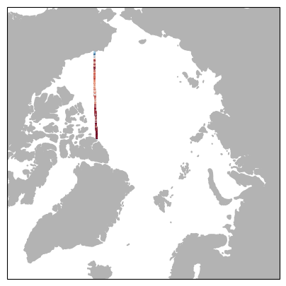
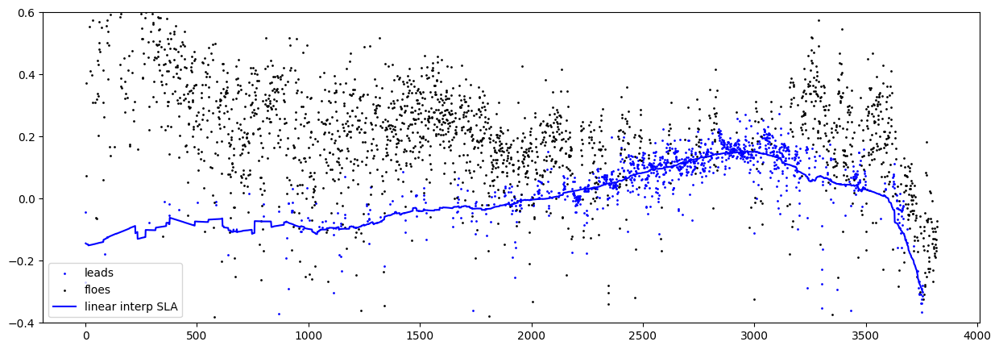
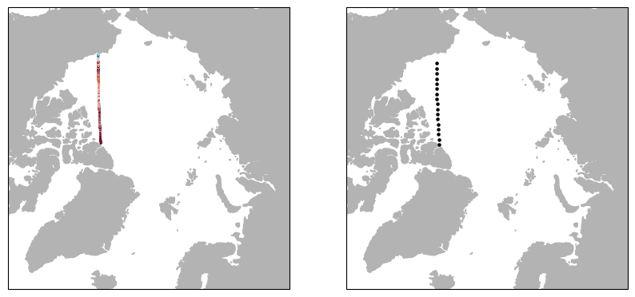
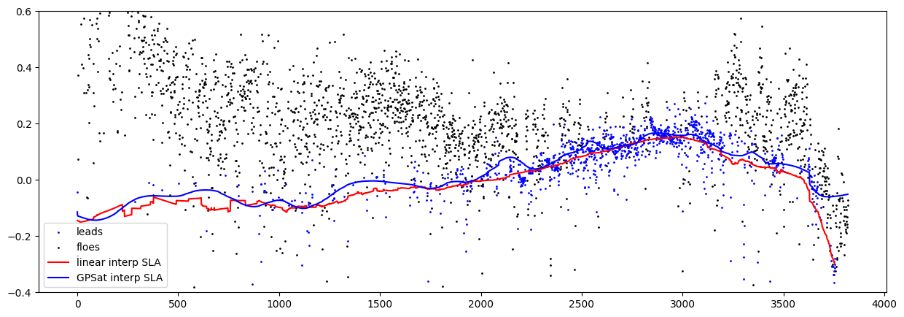

Along track interpolation#
! pip install cartopy
try:
import google.colab
IN_COLAB = True
except:
IN_COLAB = False
# TODO: allow for mounting of gdrive
# TODO: allow for checking out a branch
if IN_COLAB:
import os
import re
# change to working directory
work_dir = "/content"
assert os.path.exists(work_dir), f"workspace directory: {work_dir} does not exist"
os.chdir(work_dir)
# clone repository
!git clone https://github.com/CPOMUCL/GPSat.git
repo_dir = os.path.join(work_dir, "GPSat")
print(f"changing directory to: {repo_dir}")
os.chdir(repo_dir)
Cloning into 'GPSat'...
remote: Enumerating objects: 2667, done.
remote: Counting objects: 100% (329/329), done.
remote: Compressing objects: 100% (115/115), done.
remote: Total 2667 (delta 212), reused 320 (delta 210), pack-reused 2338
Receiving objects: 100% (2667/2667), 56.65 MiB | 21.18 MiB/s, done.
Resolving deltas: 100% (1824/1824), done.
Updating files: 100% (125/125), done.
changing directory to: /content/GPSat
if IN_COLAB:
!pip install -r requirements.txt
Ignoring gpflow: markers 'platform_system == "Darwin" and platform_machine == "arm64"' don't match your environment
Ignoring tensorflow: markers 'platform_system == "Windows"' don't match your environment
Ignoring tensorflow: markers 'platform_system == "Darwin" and platform_machine == "x86_64"' don't match your environment
Ignoring tensorflow-macos: markers 'platform_system == "Darwin" and platform_machine == "arm64"' don't match your environment
Collecting setuptools>=68.2.2 (from -r requirements.txt (line 1))
Downloading setuptools-69.1.1-py3-none-any.whl (819 kB)
━━━━━━━━━━━━━━━━━━━━━━━━━━━━━━━━━━━━━━━━ 819.3/819.3 kB 11.5 MB/s eta 0:00:00
?25hRequirement already satisfied: astropy>=5.1.1 in /usr/local/lib/python3.10/dist-packages (from -r requirements.txt (line 2)) (5.3.4)
Requirement already satisfied: chardet>=4.0.0 in /usr/local/lib/python3.10/dist-packages (from -r requirements.txt (line 3)) (5.2.0)
Requirement already satisfied: pandas==1.5.3 in /usr/local/lib/python3.10/dist-packages (from -r requirements.txt (line 4)) (1.5.3)
Collecting gpflow>=2.9.0 (from -r requirements.txt (line 10))
Downloading gpflow-2.9.1-py3-none-any.whl (380 kB)
━━━━━━━━━━━━━━━━━━━━━━━━━━━━━━━━━━━━━━━━ 380.6/380.6 kB 16.2 MB/s eta 0:00:00
?25hRequirement already satisfied: tensorflow[and-cuda]>=2.14.0 in /usr/local/lib/python3.10/dist-packages (from -r requirements.txt (line 12)) (2.15.0)
Collecting gpytorch==1.10 (from -r requirements.txt (line 19))
Downloading gpytorch-1.10-py3-none-any.whl (255 kB)
━━━━━━━━━━━━━━━━━━━━━━━━━━━━━━━━━━━━━━━━ 255.2/255.2 kB 16.1 MB/s eta 0:00:00
?25hRequirement already satisfied: matplotlib>=3.6.2 in /usr/local/lib/python3.10/dist-packages (from -r requirements.txt (line 20)) (3.7.1)
Requirement already satisfied: scipy>=1.9.3 in /usr/local/lib/python3.10/dist-packages (from -r requirements.txt (line 21)) (1.11.4)
Requirement already satisfied: tables>=3.7.0 in /usr/local/lib/python3.10/dist-packages (from -r requirements.txt (line 22)) (3.8.0)
Collecting netCDF4==1.6.2 (from -r requirements.txt (line 23))
Downloading netCDF4-1.6.2-cp310-cp310-manylinux_2_17_x86_64.manylinux2014_x86_64.whl (5.1 MB)
━━━━━━━━━━━━━━━━━━━━━━━━━━━━━━━━━━━━━━━━ 5.1/5.1 MB 29.0 MB/s eta 0:00:00
?25hRequirement already satisfied: xarray>=2022.10.0 in /usr/local/lib/python3.10/dist-packages (from -r requirements.txt (line 24)) (2023.7.0)
Requirement already satisfied: gast>=0.4.0 in /usr/local/lib/python3.10/dist-packages (from -r requirements.txt (line 25)) (0.5.4)
Requirement already satisfied: pyproj>=3.4.0 in /usr/local/lib/python3.10/dist-packages (from -r requirements.txt (line 26)) (3.6.1)
Requirement already satisfied: seaborn>=0.11.2 in /usr/local/lib/python3.10/dist-packages (from -r requirements.txt (line 27)) (0.13.1)
Collecting jupyter==1.0.0 (from -r requirements.txt (line 28))
Downloading jupyter-1.0.0-py2.py3-none-any.whl (2.7 kB)
Requirement already satisfied: scikit-learn==1.2.2 in /usr/local/lib/python3.10/dist-packages (from -r requirements.txt (line 29)) (1.2.2)
Requirement already satisfied: numba>=0.56.4 in /usr/local/lib/python3.10/dist-packages (from -r requirements.txt (line 30)) (0.58.1)
Collecting numpy<=1.23.5 (from -r requirements.txt (line 31))
Downloading numpy-1.23.5-cp310-cp310-manylinux_2_17_x86_64.manylinux2014_x86_64.whl (17.1 MB)
━━━━━━━━━━━━━━━━━━━━━━━━━━━━━━━━━━━━━━━━ 17.1/17.1 MB 34.3 MB/s eta 0:00:00
?25hRequirement already satisfied: pytest>=7.2.0 in /usr/local/lib/python3.10/dist-packages (from -r requirements.txt (line 32)) (7.4.4)
Collecting dataclasses-json==0.5.7 (from -r requirements.txt (line 33))
Downloading dataclasses_json-0.5.7-py3-none-any.whl (25 kB)
Collecting global-land-mask==1.0.0 (from -r requirements.txt (line 34))
Downloading global_land_mask-1.0.0-py3-none-any.whl (1.8 MB)
━━━━━━━━━━━━━━━━━━━━━━━━━━━━━━━━━━━━━━━━ 1.8/1.8 MB 56.3 MB/s eta 0:00:00
?25hRequirement already satisfied: cartopy==0.22.0 in /usr/local/lib/python3.10/dist-packages (from -r requirements.txt (line 35)) (0.22.0)
Requirement already satisfied: Sphinx>=5.0.2 in /usr/local/lib/python3.10/dist-packages (from -r requirements.txt (line 38)) (5.0.2)
Collecting nbsphinx>=0.9.3 (from -r requirements.txt (line 39))
Downloading nbsphinx-0.9.3-py3-none-any.whl (31 kB)
Collecting numpydoc>=1.6.0 (from -r requirements.txt (line 40))
Downloading numpydoc-1.6.0-py3-none-any.whl (61 kB)
━━━━━━━━━━━━━━━━━━━━━━━━━━━━━━━━━━━━━━━━ 61.7/61.7 kB 8.6 MB/s eta 0:00:00
?25hCollecting sphinxemoji>=0.2.0 (from -r requirements.txt (line 41))
Downloading sphinxemoji-0.3.1-py3-none-any.whl (46 kB)
━━━━━━━━━━━━━━━━━━━━━━━━━━━━━━━━━━━━━━━━ 46.1/46.1 kB 5.9 MB/s eta 0:00:00
?25hCollecting sphinx-rtd-theme>=1.3.0 (from -r requirements.txt (line 42))
Downloading sphinx_rtd_theme-2.0.0-py2.py3-none-any.whl (2.8 MB)
━━━━━━━━━━━━━━━━━━━━━━━━━━━━━━━━━━━━━━━━ 2.8/2.8 MB 41.8 MB/s eta 0:00:00
?25hRequirement already satisfied: python-dateutil>=2.8.1 in /usr/local/lib/python3.10/dist-packages (from pandas==1.5.3->-r requirements.txt (line 4)) (2.8.2)
Requirement already satisfied: pytz>=2020.1 in /usr/local/lib/python3.10/dist-packages (from pandas==1.5.3->-r requirements.txt (line 4)) (2023.4)
Collecting linear-operator>=0.4.0 (from gpytorch==1.10->-r requirements.txt (line 19))
Downloading linear_operator-0.5.2-py3-none-any.whl (175 kB)
━━━━━━━━━━━━━━━━━━━━━━━━━━━━━━━━━━━━━━━━ 175.6/175.6 kB 20.5 MB/s eta 0:00:00
?25hCollecting cftime (from netCDF4==1.6.2->-r requirements.txt (line 23))
Downloading cftime-1.6.3-cp310-cp310-manylinux_2_17_x86_64.manylinux2014_x86_64.whl (1.3 MB)
━━━━━━━━━━━━━━━━━━━━━━━━━━━━━━━━━━━━━━━━ 1.3/1.3 MB 61.8 MB/s eta 0:00:00
?25hRequirement already satisfied: notebook in /usr/local/lib/python3.10/dist-packages (from jupyter==1.0.0->-r requirements.txt (line 28)) (6.5.5)
Collecting qtconsole (from jupyter==1.0.0->-r requirements.txt (line 28))
Downloading qtconsole-5.5.1-py3-none-any.whl (123 kB)
━━━━━━━━━━━━━━━━━━━━━━━━━━━━━━━━━━━━━━━━ 123.4/123.4 kB 17.1 MB/s eta 0:00:00
?25hRequirement already satisfied: jupyter-console in /usr/local/lib/python3.10/dist-packages (from jupyter==1.0.0->-r requirements.txt (line 28)) (6.1.0)
Requirement already satisfied: nbconvert in /usr/local/lib/python3.10/dist-packages (from jupyter==1.0.0->-r requirements.txt (line 28)) (6.5.4)
Requirement already satisfied: ipykernel in /usr/local/lib/python3.10/dist-packages (from jupyter==1.0.0->-r requirements.txt (line 28)) (5.5.6)
Requirement already satisfied: ipywidgets in /usr/local/lib/python3.10/dist-packages (from jupyter==1.0.0->-r requirements.txt (line 28)) (7.7.1)
Requirement already satisfied: joblib>=1.1.1 in /usr/local/lib/python3.10/dist-packages (from scikit-learn==1.2.2->-r requirements.txt (line 29)) (1.3.2)
Requirement already satisfied: threadpoolctl>=2.0.0 in /usr/local/lib/python3.10/dist-packages (from scikit-learn==1.2.2->-r requirements.txt (line 29)) (3.3.0)
Collecting marshmallow<4.0.0,>=3.3.0 (from dataclasses-json==0.5.7->-r requirements.txt (line 33))
Downloading marshmallow-3.21.1-py3-none-any.whl (49 kB)
━━━━━━━━━━━━━━━━━━━━━━━━━━━━━━━━━━━━━━━━ 49.4/49.4 kB 6.3 MB/s eta 0:00:00
?25hCollecting marshmallow-enum<2.0.0,>=1.5.1 (from dataclasses-json==0.5.7->-r requirements.txt (line 33))
Downloading marshmallow_enum-1.5.1-py2.py3-none-any.whl (4.2 kB)
Collecting typing-inspect>=0.4.0 (from dataclasses-json==0.5.7->-r requirements.txt (line 33))
Downloading typing_inspect-0.9.0-py3-none-any.whl (8.8 kB)
Requirement already satisfied: shapely>=1.7 in /usr/local/lib/python3.10/dist-packages (from cartopy==0.22.0->-r requirements.txt (line 35)) (2.0.3)
Requirement already satisfied: packaging>=20 in /usr/local/lib/python3.10/dist-packages (from cartopy==0.22.0->-r requirements.txt (line 35)) (23.2)
Requirement already satisfied: pyshp>=2.1 in /usr/local/lib/python3.10/dist-packages (from cartopy==0.22.0->-r requirements.txt (line 35)) (2.3.1)
Requirement already satisfied: pyerfa>=2.0 in /usr/local/lib/python3.10/dist-packages (from astropy>=5.1.1->-r requirements.txt (line 2)) (2.0.1.1)
Requirement already satisfied: PyYAML>=3.13 in /usr/local/lib/python3.10/dist-packages (from astropy>=5.1.1->-r requirements.txt (line 2)) (6.0.1)
Collecting check-shapes>=1.0.0 (from gpflow>=2.9.0->-r requirements.txt (line 10))
Downloading check_shapes-1.1.1-py3-none-any.whl (45 kB)
━━━━━━━━━━━━━━━━━━━━━━━━━━━━━━━━━━━━━━━━ 45.8/45.8 kB 5.8 MB/s eta 0:00:00
?25hCollecting deprecated (from gpflow>=2.9.0->-r requirements.txt (line 10))
Downloading Deprecated-1.2.14-py2.py3-none-any.whl (9.6 kB)
Requirement already satisfied: multipledispatch>=0.6 in /usr/local/lib/python3.10/dist-packages (from gpflow>=2.9.0->-r requirements.txt (line 10)) (1.0.0)
Requirement already satisfied: tabulate in /usr/local/lib/python3.10/dist-packages (from gpflow>=2.9.0->-r requirements.txt (line 10)) (0.9.0)
Requirement already satisfied: tensorflow-probability>=0.12.0 in /usr/local/lib/python3.10/dist-packages (from gpflow>=2.9.0->-r requirements.txt (line 10)) (0.23.0)
Requirement already satisfied: typing-extensions in /usr/local/lib/python3.10/dist-packages (from gpflow>=2.9.0->-r requirements.txt (line 10)) (4.10.0)
Requirement already satisfied: absl-py>=1.0.0 in /usr/local/lib/python3.10/dist-packages (from tensorflow[and-cuda]>=2.14.0->-r requirements.txt (line 12)) (1.4.0)
Requirement already satisfied: astunparse>=1.6.0 in /usr/local/lib/python3.10/dist-packages (from tensorflow[and-cuda]>=2.14.0->-r requirements.txt (line 12)) (1.6.3)
Requirement already satisfied: flatbuffers>=23.5.26 in /usr/local/lib/python3.10/dist-packages (from tensorflow[and-cuda]>=2.14.0->-r requirements.txt (line 12)) (23.5.26)
Requirement already satisfied: google-pasta>=0.1.1 in /usr/local/lib/python3.10/dist-packages (from tensorflow[and-cuda]>=2.14.0->-r requirements.txt (line 12)) (0.2.0)
Requirement already satisfied: h5py>=2.9.0 in /usr/local/lib/python3.10/dist-packages (from tensorflow[and-cuda]>=2.14.0->-r requirements.txt (line 12)) (3.9.0)
Requirement already satisfied: libclang>=13.0.0 in /usr/local/lib/python3.10/dist-packages (from tensorflow[and-cuda]>=2.14.0->-r requirements.txt (line 12)) (16.0.6)
Requirement already satisfied: ml-dtypes~=0.2.0 in /usr/local/lib/python3.10/dist-packages (from tensorflow[and-cuda]>=2.14.0->-r requirements.txt (line 12)) (0.2.0)
Requirement already satisfied: opt-einsum>=2.3.2 in /usr/local/lib/python3.10/dist-packages (from tensorflow[and-cuda]>=2.14.0->-r requirements.txt (line 12)) (3.3.0)
Requirement already satisfied: protobuf!=4.21.0,!=4.21.1,!=4.21.2,!=4.21.3,!=4.21.4,!=4.21.5,<5.0.0dev,>=3.20.3 in /usr/local/lib/python3.10/dist-packages (from tensorflow[and-cuda]>=2.14.0->-r requirements.txt (line 12)) (3.20.3)
Requirement already satisfied: six>=1.12.0 in /usr/local/lib/python3.10/dist-packages (from tensorflow[and-cuda]>=2.14.0->-r requirements.txt (line 12)) (1.16.0)
Requirement already satisfied: termcolor>=1.1.0 in /usr/local/lib/python3.10/dist-packages (from tensorflow[and-cuda]>=2.14.0->-r requirements.txt (line 12)) (2.4.0)
Requirement already satisfied: wrapt<1.15,>=1.11.0 in /usr/local/lib/python3.10/dist-packages (from tensorflow[and-cuda]>=2.14.0->-r requirements.txt (line 12)) (1.14.1)
Requirement already satisfied: tensorflow-io-gcs-filesystem>=0.23.1 in /usr/local/lib/python3.10/dist-packages (from tensorflow[and-cuda]>=2.14.0->-r requirements.txt (line 12)) (0.36.0)
Requirement already satisfied: grpcio<2.0,>=1.24.3 in /usr/local/lib/python3.10/dist-packages (from tensorflow[and-cuda]>=2.14.0->-r requirements.txt (line 12)) (1.62.0)
Requirement already satisfied: tensorboard<2.16,>=2.15 in /usr/local/lib/python3.10/dist-packages (from tensorflow[and-cuda]>=2.14.0->-r requirements.txt (line 12)) (2.15.2)
Requirement already satisfied: tensorflow-estimator<2.16,>=2.15.0 in /usr/local/lib/python3.10/dist-packages (from tensorflow[and-cuda]>=2.14.0->-r requirements.txt (line 12)) (2.15.0)
Requirement already satisfied: keras<2.16,>=2.15.0 in /usr/local/lib/python3.10/dist-packages (from tensorflow[and-cuda]>=2.14.0->-r requirements.txt (line 12)) (2.15.0)
Collecting nvidia-cublas-cu12==12.2.5.6 (from tensorflow[and-cuda]>=2.14.0->-r requirements.txt (line 12))
Downloading nvidia_cublas_cu12-12.2.5.6-py3-none-manylinux1_x86_64.whl (417.8 MB)
━━━━━━━━━━━━━━━━━━━━━━━━━━━━━━━━━━━━━━━━ 417.8/417.8 MB 2.2 MB/s eta 0:00:00
?25hCollecting nvidia-cuda-cupti-cu12==12.2.142 (from tensorflow[and-cuda]>=2.14.0->-r requirements.txt (line 12))
Downloading nvidia_cuda_cupti_cu12-12.2.142-py3-none-manylinux1_x86_64.whl (13.9 MB)
━━━━━━━━━━━━━━━━━━━━━━━━━━━━━━━━━━━━━━━━ 13.9/13.9 MB 88.2 MB/s eta 0:00:00
?25hCollecting nvidia-cuda-nvcc-cu12==12.2.140 (from tensorflow[and-cuda]>=2.14.0->-r requirements.txt (line 12))
Downloading nvidia_cuda_nvcc_cu12-12.2.140-py3-none-manylinux1_x86_64.whl (21.3 MB)
━━━━━━━━━━━━━━━━━━━━━━━━━━━━━━━━━━━━━━━━ 21.3/21.3 MB 76.7 MB/s eta 0:00:00
?25hCollecting nvidia-cuda-nvrtc-cu12==12.2.140 (from tensorflow[and-cuda]>=2.14.0->-r requirements.txt (line 12))
Downloading nvidia_cuda_nvrtc_cu12-12.2.140-py3-none-manylinux1_x86_64.whl (23.4 MB)
━━━━━━━━━━━━━━━━━━━━━━━━━━━━━━━━━━━━━━━━ 23.4/23.4 MB 72.9 MB/s eta 0:00:00
?25hCollecting nvidia-cuda-runtime-cu12==12.2.140 (from tensorflow[and-cuda]>=2.14.0->-r requirements.txt (line 12))
Downloading nvidia_cuda_runtime_cu12-12.2.140-py3-none-manylinux1_x86_64.whl (845 kB)
━━━━━━━━━━━━━━━━━━━━━━━━━━━━━━━━━━━━━━━━ 845.8/845.8 kB 71.5 MB/s eta 0:00:00
?25hCollecting nvidia-cudnn-cu12==8.9.4.25 (from tensorflow[and-cuda]>=2.14.0->-r requirements.txt (line 12))
Downloading nvidia_cudnn_cu12-8.9.4.25-py3-none-manylinux1_x86_64.whl (720.1 MB)
━━━━━━━━━━━━━━━━━━━━━━━━━━━━━━━━━━━━━━━━ 720.1/720.1 MB 2.4 MB/s eta 0:00:00
?25hCollecting nvidia-cufft-cu12==11.0.8.103 (from tensorflow[and-cuda]>=2.14.0->-r requirements.txt (line 12))
Downloading nvidia_cufft_cu12-11.0.8.103-py3-none-manylinux1_x86_64.whl (98.6 MB)
━━━━━━━━━━━━━━━━━━━━━━━━━━━━━━━━━━━━━━━━ 98.6/98.6 MB 9.0 MB/s eta 0:00:00
?25hCollecting nvidia-curand-cu12==10.3.3.141 (from tensorflow[and-cuda]>=2.14.0->-r requirements.txt (line 12))
Downloading nvidia_curand_cu12-10.3.3.141-py3-none-manylinux1_x86_64.whl (56.5 MB)
━━━━━━━━━━━━━━━━━━━━━━━━━━━━━━━━━━━━━━━━ 56.5/56.5 MB 10.7 MB/s eta 0:00:00
?25hCollecting nvidia-cusolver-cu12==11.5.2.141 (from tensorflow[and-cuda]>=2.14.0->-r requirements.txt (line 12))
Downloading nvidia_cusolver_cu12-11.5.2.141-py3-none-manylinux1_x86_64.whl (124.9 MB)
━━━━━━━━━━━━━━━━━━━━━━━━━━━━━━━━━━━━━━━━ 124.9/124.9 MB 8.2 MB/s eta 0:00:00
?25hCollecting nvidia-cusparse-cu12==12.1.2.141 (from tensorflow[and-cuda]>=2.14.0->-r requirements.txt (line 12))
Downloading nvidia_cusparse_cu12-12.1.2.141-py3-none-manylinux1_x86_64.whl (195.3 MB)
━━━━━━━━━━━━━━━━━━━━━━━━━━━━━━━━━━━━━━━━ 195.3/195.3 MB 6.6 MB/s eta 0:00:00
?25hCollecting nvidia-nccl-cu12==2.16.5 (from tensorflow[and-cuda]>=2.14.0->-r requirements.txt (line 12))
Downloading nvidia_nccl_cu12-2.16.5-py3-none-manylinux1_x86_64.whl (188.7 MB)
━━━━━━━━━━━━━━━━━━━━━━━━━━━━━━━━━━━━━━━━ 188.7/188.7 MB 6.6 MB/s eta 0:00:00
?25hCollecting nvidia-nvjitlink-cu12==12.2.140 (from tensorflow[and-cuda]>=2.14.0->-r requirements.txt (line 12))
Downloading nvidia_nvjitlink_cu12-12.2.140-py3-none-manylinux1_x86_64.whl (20.2 MB)
━━━━━━━━━━━━━━━━━━━━━━━━━━━━━━━━━━━━━━━━ 20.2/20.2 MB 84.0 MB/s eta 0:00:00
?25hCollecting tensorrt==8.6.1.post1 (from tensorflow[and-cuda]>=2.14.0->-r requirements.txt (line 12))
Downloading tensorrt-8.6.1.post1.tar.gz (18 kB)
Preparing metadata (setup.py) ... ?25l?25hdone
Collecting tensorrt-bindings==8.6.1 (from tensorflow[and-cuda]>=2.14.0->-r requirements.txt (line 12))
Downloading tensorrt_bindings-8.6.1-cp310-none-manylinux_2_17_x86_64.whl (979 kB)
━━━━━━━━━━━━━━━━━━━━━━━━━━━━━━━━━━━━━━━━ 979.4/979.4 kB 65.1 MB/s eta 0:00:00
?25hINFO: pip is looking at multiple versions of tensorflow[and-cuda] to determine which version is compatible with other requirements. This could take a while.
Collecting tensorflow[and-cuda]>=2.14.0 (from -r requirements.txt (line 12))
Downloading tensorflow-2.15.0.post1-cp310-cp310-manylinux_2_17_x86_64.manylinux2014_x86_64.whl (475.2 MB)
━━━━━━━━━━━━━━━━━━━━━━━━━━━━━━━━━━━━━━━━ 475.2/475.2 MB 3.4 MB/s eta 0:00:00
?25hRequirement already satisfied: contourpy>=1.0.1 in /usr/local/lib/python3.10/dist-packages (from matplotlib>=3.6.2->-r requirements.txt (line 20)) (1.2.0)
Requirement already satisfied: cycler>=0.10 in /usr/local/lib/python3.10/dist-packages (from matplotlib>=3.6.2->-r requirements.txt (line 20)) (0.12.1)
Requirement already satisfied: fonttools>=4.22.0 in /usr/local/lib/python3.10/dist-packages (from matplotlib>=3.6.2->-r requirements.txt (line 20)) (4.49.0)
Requirement already satisfied: kiwisolver>=1.0.1 in /usr/local/lib/python3.10/dist-packages (from matplotlib>=3.6.2->-r requirements.txt (line 20)) (1.4.5)
Requirement already satisfied: pillow>=6.2.0 in /usr/local/lib/python3.10/dist-packages (from matplotlib>=3.6.2->-r requirements.txt (line 20)) (9.4.0)
Requirement already satisfied: pyparsing>=2.3.1 in /usr/local/lib/python3.10/dist-packages (from matplotlib>=3.6.2->-r requirements.txt (line 20)) (3.1.1)
Requirement already satisfied: cython>=0.29.21 in /usr/local/lib/python3.10/dist-packages (from tables>=3.7.0->-r requirements.txt (line 22)) (3.0.9)
Requirement already satisfied: numexpr>=2.6.2 in /usr/local/lib/python3.10/dist-packages (from tables>=3.7.0->-r requirements.txt (line 22)) (2.9.0)
Requirement already satisfied: blosc2~=2.0.0 in /usr/local/lib/python3.10/dist-packages (from tables>=3.7.0->-r requirements.txt (line 22)) (2.0.0)
Requirement already satisfied: py-cpuinfo in /usr/local/lib/python3.10/dist-packages (from tables>=3.7.0->-r requirements.txt (line 22)) (9.0.0)
Requirement already satisfied: certifi in /usr/local/lib/python3.10/dist-packages (from pyproj>=3.4.0->-r requirements.txt (line 26)) (2024.2.2)
Requirement already satisfied: llvmlite<0.42,>=0.41.0dev0 in /usr/local/lib/python3.10/dist-packages (from numba>=0.56.4->-r requirements.txt (line 30)) (0.41.1)
Requirement already satisfied: iniconfig in /usr/local/lib/python3.10/dist-packages (from pytest>=7.2.0->-r requirements.txt (line 32)) (2.0.0)
Requirement already satisfied: pluggy<2.0,>=0.12 in /usr/local/lib/python3.10/dist-packages (from pytest>=7.2.0->-r requirements.txt (line 32)) (1.4.0)
Requirement already satisfied: exceptiongroup>=1.0.0rc8 in /usr/local/lib/python3.10/dist-packages (from pytest>=7.2.0->-r requirements.txt (line 32)) (1.2.0)
Requirement already satisfied: tomli>=1.0.0 in /usr/local/lib/python3.10/dist-packages (from pytest>=7.2.0->-r requirements.txt (line 32)) (2.0.1)
Requirement already satisfied: sphinxcontrib-applehelp in /usr/local/lib/python3.10/dist-packages (from Sphinx>=5.0.2->-r requirements.txt (line 38)) (1.0.8)
Requirement already satisfied: sphinxcontrib-devhelp in /usr/local/lib/python3.10/dist-packages (from Sphinx>=5.0.2->-r requirements.txt (line 38)) (1.0.6)
Requirement already satisfied: sphinxcontrib-jsmath in /usr/local/lib/python3.10/dist-packages (from Sphinx>=5.0.2->-r requirements.txt (line 38)) (1.0.1)
Requirement already satisfied: sphinxcontrib-htmlhelp>=2.0.0 in /usr/local/lib/python3.10/dist-packages (from Sphinx>=5.0.2->-r requirements.txt (line 38)) (2.0.5)
Requirement already satisfied: sphinxcontrib-serializinghtml>=1.1.5 in /usr/local/lib/python3.10/dist-packages (from Sphinx>=5.0.2->-r requirements.txt (line 38)) (1.1.10)
Requirement already satisfied: sphinxcontrib-qthelp in /usr/local/lib/python3.10/dist-packages (from Sphinx>=5.0.2->-r requirements.txt (line 38)) (1.0.7)
Requirement already satisfied: Jinja2>=2.3 in /usr/local/lib/python3.10/dist-packages (from Sphinx>=5.0.2->-r requirements.txt (line 38)) (3.1.3)
Requirement already satisfied: Pygments>=2.0 in /usr/local/lib/python3.10/dist-packages (from Sphinx>=5.0.2->-r requirements.txt (line 38)) (2.16.1)
Requirement already satisfied: docutils<0.19,>=0.14 in /usr/local/lib/python3.10/dist-packages (from Sphinx>=5.0.2->-r requirements.txt (line 38)) (0.18.1)
Requirement already satisfied: snowballstemmer>=1.1 in /usr/local/lib/python3.10/dist-packages (from Sphinx>=5.0.2->-r requirements.txt (line 38)) (2.2.0)
Requirement already satisfied: babel>=1.3 in /usr/local/lib/python3.10/dist-packages (from Sphinx>=5.0.2->-r requirements.txt (line 38)) (2.14.0)
Requirement already satisfied: alabaster<0.8,>=0.7 in /usr/local/lib/python3.10/dist-packages (from Sphinx>=5.0.2->-r requirements.txt (line 38)) (0.7.16)
Requirement already satisfied: imagesize in /usr/local/lib/python3.10/dist-packages (from Sphinx>=5.0.2->-r requirements.txt (line 38)) (1.4.1)
Requirement already satisfied: requests>=2.5.0 in /usr/local/lib/python3.10/dist-packages (from Sphinx>=5.0.2->-r requirements.txt (line 38)) (2.31.0)
Requirement already satisfied: traitlets>=5 in /usr/local/lib/python3.10/dist-packages (from nbsphinx>=0.9.3->-r requirements.txt (line 39)) (5.7.1)
Requirement already satisfied: nbformat in /usr/local/lib/python3.10/dist-packages (from nbsphinx>=0.9.3->-r requirements.txt (line 39)) (5.9.2)
Collecting sphinxcontrib-jquery<5,>=4 (from sphinx-rtd-theme>=1.3.0->-r requirements.txt (line 42))
Downloading sphinxcontrib_jquery-4.1-py2.py3-none-any.whl (121 kB)
━━━━━━━━━━━━━━━━━━━━━━━━━━━━━━━━━━━━━━━━ 121.1/121.1 kB 15.2 MB/s eta 0:00:00
?25hRequirement already satisfied: wheel<1.0,>=0.23.0 in /usr/local/lib/python3.10/dist-packages (from astunparse>=1.6.0->tensorflow[and-cuda]>=2.14.0->-r requirements.txt (line 12)) (0.42.0)
Requirement already satisfied: msgpack in /usr/local/lib/python3.10/dist-packages (from blosc2~=2.0.0->tables>=3.7.0->-r requirements.txt (line 22)) (1.0.8)
Collecting dropstackframe>=0.1.0 (from check-shapes>=1.0.0->gpflow>=2.9.0->-r requirements.txt (line 10))
Downloading dropstackframe-0.1.0-py3-none-any.whl (4.5 kB)
Collecting lark<2.0.0,>=1.1.0 (from check-shapes>=1.0.0->gpflow>=2.9.0->-r requirements.txt (line 10))
Downloading lark-1.1.9-py3-none-any.whl (111 kB)
━━━━━━━━━━━━━━━━━━━━━━━━━━━━━━━━━━━━━━━━ 111.7/111.7 kB 15.0 MB/s eta 0:00:00
?25hRequirement already satisfied: MarkupSafe>=2.0 in /usr/local/lib/python3.10/dist-packages (from Jinja2>=2.3->Sphinx>=5.0.2->-r requirements.txt (line 38)) (2.1.5)
Requirement already satisfied: torch>=1.11 in /usr/local/lib/python3.10/dist-packages (from linear-operator>=0.4.0->gpytorch==1.10->-r requirements.txt (line 19)) (2.1.0+cu121)
Collecting jaxtyping>=0.2.9 (from linear-operator>=0.4.0->gpytorch==1.10->-r requirements.txt (line 19))
Downloading jaxtyping-0.2.28-py3-none-any.whl (40 kB)
━━━━━━━━━━━━━━━━━━━━━━━━━━━━━━━━━━━━━━━━ 40.7/40.7 kB 5.0 MB/s eta 0:00:00
?25hCollecting typeguard~=2.13.3 (from linear-operator>=0.4.0->gpytorch==1.10->-r requirements.txt (line 19))
Downloading typeguard-2.13.3-py3-none-any.whl (17 kB)
Requirement already satisfied: lxml in /usr/local/lib/python3.10/dist-packages (from nbconvert->jupyter==1.0.0->-r requirements.txt (line 28)) (4.9.4)
Requirement already satisfied: beautifulsoup4 in /usr/local/lib/python3.10/dist-packages (from nbconvert->jupyter==1.0.0->-r requirements.txt (line 28)) (4.12.3)
Requirement already satisfied: bleach in /usr/local/lib/python3.10/dist-packages (from nbconvert->jupyter==1.0.0->-r requirements.txt (line 28)) (6.1.0)
Requirement already satisfied: defusedxml in /usr/local/lib/python3.10/dist-packages (from nbconvert->jupyter==1.0.0->-r requirements.txt (line 28)) (0.7.1)
Requirement already satisfied: entrypoints>=0.2.2 in /usr/local/lib/python3.10/dist-packages (from nbconvert->jupyter==1.0.0->-r requirements.txt (line 28)) (0.4)
Requirement already satisfied: jupyter-core>=4.7 in /usr/local/lib/python3.10/dist-packages (from nbconvert->jupyter==1.0.0->-r requirements.txt (line 28)) (5.7.1)
Requirement already satisfied: jupyterlab-pygments in /usr/local/lib/python3.10/dist-packages (from nbconvert->jupyter==1.0.0->-r requirements.txt (line 28)) (0.3.0)
Requirement already satisfied: mistune<2,>=0.8.1 in /usr/local/lib/python3.10/dist-packages (from nbconvert->jupyter==1.0.0->-r requirements.txt (line 28)) (0.8.4)
Requirement already satisfied: nbclient>=0.5.0 in /usr/local/lib/python3.10/dist-packages (from nbconvert->jupyter==1.0.0->-r requirements.txt (line 28)) (0.9.0)
Requirement already satisfied: pandocfilters>=1.4.1 in /usr/local/lib/python3.10/dist-packages (from nbconvert->jupyter==1.0.0->-r requirements.txt (line 28)) (1.5.1)
Requirement already satisfied: tinycss2 in /usr/local/lib/python3.10/dist-packages (from nbconvert->jupyter==1.0.0->-r requirements.txt (line 28)) (1.2.1)
Requirement already satisfied: fastjsonschema in /usr/local/lib/python3.10/dist-packages (from nbformat->nbsphinx>=0.9.3->-r requirements.txt (line 39)) (2.19.1)
Requirement already satisfied: jsonschema>=2.6 in /usr/local/lib/python3.10/dist-packages (from nbformat->nbsphinx>=0.9.3->-r requirements.txt (line 39)) (4.19.2)
Requirement already satisfied: charset-normalizer<4,>=2 in /usr/local/lib/python3.10/dist-packages (from requests>=2.5.0->Sphinx>=5.0.2->-r requirements.txt (line 38)) (3.3.2)
Requirement already satisfied: idna<4,>=2.5 in /usr/local/lib/python3.10/dist-packages (from requests>=2.5.0->Sphinx>=5.0.2->-r requirements.txt (line 38)) (3.6)
Requirement already satisfied: urllib3<3,>=1.21.1 in /usr/local/lib/python3.10/dist-packages (from requests>=2.5.0->Sphinx>=5.0.2->-r requirements.txt (line 38)) (2.0.7)
Requirement already satisfied: google-auth<3,>=1.6.3 in /usr/local/lib/python3.10/dist-packages (from tensorboard<2.16,>=2.15->tensorflow[and-cuda]>=2.14.0->-r requirements.txt (line 12)) (2.27.0)
Requirement already satisfied: google-auth-oauthlib<2,>=0.5 in /usr/local/lib/python3.10/dist-packages (from tensorboard<2.16,>=2.15->tensorflow[and-cuda]>=2.14.0->-r requirements.txt (line 12)) (1.2.0)
Requirement already satisfied: markdown>=2.6.8 in /usr/local/lib/python3.10/dist-packages (from tensorboard<2.16,>=2.15->tensorflow[and-cuda]>=2.14.0->-r requirements.txt (line 12)) (3.5.2)
Requirement already satisfied: tensorboard-data-server<0.8.0,>=0.7.0 in /usr/local/lib/python3.10/dist-packages (from tensorboard<2.16,>=2.15->tensorflow[and-cuda]>=2.14.0->-r requirements.txt (line 12)) (0.7.2)
Requirement already satisfied: werkzeug>=1.0.1 in /usr/local/lib/python3.10/dist-packages (from tensorboard<2.16,>=2.15->tensorflow[and-cuda]>=2.14.0->-r requirements.txt (line 12)) (3.0.1)
Requirement already satisfied: decorator in /usr/local/lib/python3.10/dist-packages (from tensorflow-probability>=0.12.0->gpflow>=2.9.0->-r requirements.txt (line 10)) (4.4.2)
Requirement already satisfied: cloudpickle>=1.3 in /usr/local/lib/python3.10/dist-packages (from tensorflow-probability>=0.12.0->gpflow>=2.9.0->-r requirements.txt (line 10)) (2.2.1)
Requirement already satisfied: dm-tree in /usr/local/lib/python3.10/dist-packages (from tensorflow-probability>=0.12.0->gpflow>=2.9.0->-r requirements.txt (line 10)) (0.1.8)
Collecting mypy-extensions>=0.3.0 (from typing-inspect>=0.4.0->dataclasses-json==0.5.7->-r requirements.txt (line 33))
Downloading mypy_extensions-1.0.0-py3-none-any.whl (4.7 kB)
Requirement already satisfied: ipython-genutils in /usr/local/lib/python3.10/dist-packages (from ipykernel->jupyter==1.0.0->-r requirements.txt (line 28)) (0.2.0)
Requirement already satisfied: ipython>=5.0.0 in /usr/local/lib/python3.10/dist-packages (from ipykernel->jupyter==1.0.0->-r requirements.txt (line 28)) (7.34.0)
Requirement already satisfied: jupyter-client in /usr/local/lib/python3.10/dist-packages (from ipykernel->jupyter==1.0.0->-r requirements.txt (line 28)) (6.1.12)
Requirement already satisfied: tornado>=4.2 in /usr/local/lib/python3.10/dist-packages (from ipykernel->jupyter==1.0.0->-r requirements.txt (line 28)) (6.3.3)
Requirement already satisfied: widgetsnbextension~=3.6.0 in /usr/local/lib/python3.10/dist-packages (from ipywidgets->jupyter==1.0.0->-r requirements.txt (line 28)) (3.6.6)
Requirement already satisfied: jupyterlab-widgets>=1.0.0 in /usr/local/lib/python3.10/dist-packages (from ipywidgets->jupyter==1.0.0->-r requirements.txt (line 28)) (3.0.10)
Requirement already satisfied: prompt-toolkit!=3.0.0,!=3.0.1,<3.1.0,>=2.0.0 in /usr/local/lib/python3.10/dist-packages (from jupyter-console->jupyter==1.0.0->-r requirements.txt (line 28)) (3.0.43)
Requirement already satisfied: pyzmq<25,>=17 in /usr/local/lib/python3.10/dist-packages (from notebook->jupyter==1.0.0->-r requirements.txt (line 28)) (23.2.1)
Requirement already satisfied: argon2-cffi in /usr/local/lib/python3.10/dist-packages (from notebook->jupyter==1.0.0->-r requirements.txt (line 28)) (23.1.0)
Requirement already satisfied: nest-asyncio>=1.5 in /usr/local/lib/python3.10/dist-packages (from notebook->jupyter==1.0.0->-r requirements.txt (line 28)) (1.6.0)
Requirement already satisfied: Send2Trash>=1.8.0 in /usr/local/lib/python3.10/dist-packages (from notebook->jupyter==1.0.0->-r requirements.txt (line 28)) (1.8.2)
Requirement already satisfied: terminado>=0.8.3 in /usr/local/lib/python3.10/dist-packages (from notebook->jupyter==1.0.0->-r requirements.txt (line 28)) (0.18.0)
Requirement already satisfied: prometheus-client in /usr/local/lib/python3.10/dist-packages (from notebook->jupyter==1.0.0->-r requirements.txt (line 28)) (0.20.0)
Requirement already satisfied: nbclassic>=0.4.7 in /usr/local/lib/python3.10/dist-packages (from notebook->jupyter==1.0.0->-r requirements.txt (line 28)) (1.0.0)
Collecting qtpy>=2.4.0 (from qtconsole->jupyter==1.0.0->-r requirements.txt (line 28))
Downloading QtPy-2.4.1-py3-none-any.whl (93 kB)
━━━━━━━━━━━━━━━━━━━━━━━━━━━━━━━━━━━━━━━━ 93.5/93.5 kB 13.2 MB/s eta 0:00:00
?25hRequirement already satisfied: cachetools<6.0,>=2.0.0 in /usr/local/lib/python3.10/dist-packages (from google-auth<3,>=1.6.3->tensorboard<2.16,>=2.15->tensorflow[and-cuda]>=2.14.0->-r requirements.txt (line 12)) (5.3.3)
Requirement already satisfied: pyasn1-modules>=0.2.1 in /usr/local/lib/python3.10/dist-packages (from google-auth<3,>=1.6.3->tensorboard<2.16,>=2.15->tensorflow[and-cuda]>=2.14.0->-r requirements.txt (line 12)) (0.3.0)
Requirement already satisfied: rsa<5,>=3.1.4 in /usr/local/lib/python3.10/dist-packages (from google-auth<3,>=1.6.3->tensorboard<2.16,>=2.15->tensorflow[and-cuda]>=2.14.0->-r requirements.txt (line 12)) (4.9)
Requirement already satisfied: requests-oauthlib>=0.7.0 in /usr/local/lib/python3.10/dist-packages (from google-auth-oauthlib<2,>=0.5->tensorboard<2.16,>=2.15->tensorflow[and-cuda]>=2.14.0->-r requirements.txt (line 12)) (1.3.1)
Collecting jedi>=0.16 (from ipython>=5.0.0->ipykernel->jupyter==1.0.0->-r requirements.txt (line 28))
Downloading jedi-0.19.1-py2.py3-none-any.whl (1.6 MB)
━━━━━━━━━━━━━━━━━━━━━━━━━━━━━━━━━━━━━━━━ 1.6/1.6 MB 85.0 MB/s eta 0:00:00
?25hRequirement already satisfied: pickleshare in /usr/local/lib/python3.10/dist-packages (from ipython>=5.0.0->ipykernel->jupyter==1.0.0->-r requirements.txt (line 28)) (0.7.5)
Requirement already satisfied: backcall in /usr/local/lib/python3.10/dist-packages (from ipython>=5.0.0->ipykernel->jupyter==1.0.0->-r requirements.txt (line 28)) (0.2.0)
Requirement already satisfied: matplotlib-inline in /usr/local/lib/python3.10/dist-packages (from ipython>=5.0.0->ipykernel->jupyter==1.0.0->-r requirements.txt (line 28)) (0.1.6)
Requirement already satisfied: pexpect>4.3 in /usr/local/lib/python3.10/dist-packages (from ipython>=5.0.0->ipykernel->jupyter==1.0.0->-r requirements.txt (line 28)) (4.9.0)
Requirement already satisfied: attrs>=22.2.0 in /usr/local/lib/python3.10/dist-packages (from jsonschema>=2.6->nbformat->nbsphinx>=0.9.3->-r requirements.txt (line 39)) (23.2.0)
Requirement already satisfied: jsonschema-specifications>=2023.03.6 in /usr/local/lib/python3.10/dist-packages (from jsonschema>=2.6->nbformat->nbsphinx>=0.9.3->-r requirements.txt (line 39)) (2023.12.1)
Requirement already satisfied: referencing>=0.28.4 in /usr/local/lib/python3.10/dist-packages (from jsonschema>=2.6->nbformat->nbsphinx>=0.9.3->-r requirements.txt (line 39)) (0.33.0)
Requirement already satisfied: rpds-py>=0.7.1 in /usr/local/lib/python3.10/dist-packages (from jsonschema>=2.6->nbformat->nbsphinx>=0.9.3->-r requirements.txt (line 39)) (0.18.0)
Requirement already satisfied: platformdirs>=2.5 in /usr/local/lib/python3.10/dist-packages (from jupyter-core>=4.7->nbconvert->jupyter==1.0.0->-r requirements.txt (line 28)) (4.2.0)
Requirement already satisfied: jupyter-server>=1.8 in /usr/local/lib/python3.10/dist-packages (from nbclassic>=0.4.7->notebook->jupyter==1.0.0->-r requirements.txt (line 28)) (1.24.0)
Requirement already satisfied: notebook-shim>=0.2.3 in /usr/local/lib/python3.10/dist-packages (from nbclassic>=0.4.7->notebook->jupyter==1.0.0->-r requirements.txt (line 28)) (0.2.4)
Requirement already satisfied: wcwidth in /usr/local/lib/python3.10/dist-packages (from prompt-toolkit!=3.0.0,!=3.0.1,<3.1.0,>=2.0.0->jupyter-console->jupyter==1.0.0->-r requirements.txt (line 28)) (0.2.13)
Requirement already satisfied: ptyprocess in /usr/local/lib/python3.10/dist-packages (from terminado>=0.8.3->notebook->jupyter==1.0.0->-r requirements.txt (line 28)) (0.7.0)
Requirement already satisfied: filelock in /usr/local/lib/python3.10/dist-packages (from torch>=1.11->linear-operator>=0.4.0->gpytorch==1.10->-r requirements.txt (line 19)) (3.13.1)
Requirement already satisfied: sympy in /usr/local/lib/python3.10/dist-packages (from torch>=1.11->linear-operator>=0.4.0->gpytorch==1.10->-r requirements.txt (line 19)) (1.12)
Requirement already satisfied: networkx in /usr/local/lib/python3.10/dist-packages (from torch>=1.11->linear-operator>=0.4.0->gpytorch==1.10->-r requirements.txt (line 19)) (3.2.1)
Requirement already satisfied: fsspec in /usr/local/lib/python3.10/dist-packages (from torch>=1.11->linear-operator>=0.4.0->gpytorch==1.10->-r requirements.txt (line 19)) (2023.6.0)
Requirement already satisfied: triton==2.1.0 in /usr/local/lib/python3.10/dist-packages (from torch>=1.11->linear-operator>=0.4.0->gpytorch==1.10->-r requirements.txt (line 19)) (2.1.0)
Requirement already satisfied: argon2-cffi-bindings in /usr/local/lib/python3.10/dist-packages (from argon2-cffi->notebook->jupyter==1.0.0->-r requirements.txt (line 28)) (21.2.0)
Requirement already satisfied: soupsieve>1.2 in /usr/local/lib/python3.10/dist-packages (from beautifulsoup4->nbconvert->jupyter==1.0.0->-r requirements.txt (line 28)) (2.5)
Requirement already satisfied: webencodings in /usr/local/lib/python3.10/dist-packages (from bleach->nbconvert->jupyter==1.0.0->-r requirements.txt (line 28)) (0.5.1)
Requirement already satisfied: parso<0.9.0,>=0.8.3 in /usr/local/lib/python3.10/dist-packages (from jedi>=0.16->ipython>=5.0.0->ipykernel->jupyter==1.0.0->-r requirements.txt (line 28)) (0.8.3)
Requirement already satisfied: anyio<4,>=3.1.0 in /usr/local/lib/python3.10/dist-packages (from jupyter-server>=1.8->nbclassic>=0.4.7->notebook->jupyter==1.0.0->-r requirements.txt (line 28)) (3.7.1)
Requirement already satisfied: websocket-client in /usr/local/lib/python3.10/dist-packages (from jupyter-server>=1.8->nbclassic>=0.4.7->notebook->jupyter==1.0.0->-r requirements.txt (line 28)) (1.7.0)
Requirement already satisfied: pyasn1<0.6.0,>=0.4.6 in /usr/local/lib/python3.10/dist-packages (from pyasn1-modules>=0.2.1->google-auth<3,>=1.6.3->tensorboard<2.16,>=2.15->tensorflow[and-cuda]>=2.14.0->-r requirements.txt (line 12)) (0.5.1)
Requirement already satisfied: oauthlib>=3.0.0 in /usr/local/lib/python3.10/dist-packages (from requests-oauthlib>=0.7.0->google-auth-oauthlib<2,>=0.5->tensorboard<2.16,>=2.15->tensorflow[and-cuda]>=2.14.0->-r requirements.txt (line 12)) (3.2.2)
Requirement already satisfied: cffi>=1.0.1 in /usr/local/lib/python3.10/dist-packages (from argon2-cffi-bindings->argon2-cffi->notebook->jupyter==1.0.0->-r requirements.txt (line 28)) (1.16.0)
Requirement already satisfied: mpmath>=0.19 in /usr/local/lib/python3.10/dist-packages (from sympy->torch>=1.11->linear-operator>=0.4.0->gpytorch==1.10->-r requirements.txt (line 19)) (1.3.0)
Requirement already satisfied: sniffio>=1.1 in /usr/local/lib/python3.10/dist-packages (from anyio<4,>=3.1.0->jupyter-server>=1.8->nbclassic>=0.4.7->notebook->jupyter==1.0.0->-r requirements.txt (line 28)) (1.3.1)
Requirement already satisfied: pycparser in /usr/local/lib/python3.10/dist-packages (from cffi>=1.0.1->argon2-cffi-bindings->argon2-cffi->notebook->jupyter==1.0.0->-r requirements.txt (line 28)) (2.21)
Installing collected packages: global-land-mask, typeguard, setuptools, qtpy, nvidia-nvjitlink-cu12, nvidia-nccl-cu12, nvidia-curand-cu12, nvidia-cufft-cu12, nvidia-cuda-runtime-cu12, nvidia-cuda-nvrtc-cu12, nvidia-cuda-nvcc-cu12, nvidia-cuda-cupti-cu12, nvidia-cublas-cu12, numpy, mypy-extensions, marshmallow, lark, jedi, dropstackframe, deprecated, typing-inspect, nvidia-cusparse-cu12, nvidia-cudnn-cu12, marshmallow-enum, jaxtyping, check-shapes, cftime, sphinxemoji, sphinxcontrib-jquery, nvidia-cusolver-cu12, numpydoc, netCDF4, linear-operator, dataclasses-json, sphinx-rtd-theme, qtconsole, gpytorch, tensorflow, gpflow, nbsphinx, jupyter
Attempting uninstall: setuptools
Found existing installation: setuptools 67.7.2
Uninstalling setuptools-67.7.2:
Successfully uninstalled setuptools-67.7.2
Attempting uninstall: numpy
Found existing installation: numpy 1.25.2
Uninstalling numpy-1.25.2:
Successfully uninstalled numpy-1.25.2
Attempting uninstall: tensorflow
Found existing installation: tensorflow 2.15.0
Uninstalling tensorflow-2.15.0:
Successfully uninstalled tensorflow-2.15.0
ERROR: pip's dependency resolver does not currently take into account all the packages that are installed. This behaviour is the source of the following dependency conflicts.
chex 0.1.85 requires numpy>=1.24.1, but you have numpy 1.23.5 which is incompatible.
Successfully installed cftime-1.6.3 check-shapes-1.1.1 dataclasses-json-0.5.7 deprecated-1.2.14 dropstackframe-0.1.0 global-land-mask-1.0.0 gpflow-2.9.1 gpytorch-1.10 jaxtyping-0.2.28 jedi-0.19.1 jupyter-1.0.0 lark-1.1.9 linear-operator-0.5.2 marshmallow-3.21.1 marshmallow-enum-1.5.1 mypy-extensions-1.0.0 nbsphinx-0.9.3 netCDF4-1.6.2 numpy-1.23.5 numpydoc-1.6.0 nvidia-cublas-cu12-12.2.5.6 nvidia-cuda-cupti-cu12-12.2.142 nvidia-cuda-nvcc-cu12-12.2.140 nvidia-cuda-nvrtc-cu12-12.2.140 nvidia-cuda-runtime-cu12-12.2.140 nvidia-cudnn-cu12-8.9.4.25 nvidia-cufft-cu12-11.0.8.103 nvidia-curand-cu12-10.3.3.141 nvidia-cusolver-cu12-11.5.2.141 nvidia-cusparse-cu12-12.1.2.141 nvidia-nccl-cu12-2.16.5 nvidia-nvjitlink-cu12-12.2.140 qtconsole-5.5.1 qtpy-2.4.1 setuptools-69.1.1 sphinx-rtd-theme-2.0.0 sphinxcontrib-jquery-4.1 sphinxemoji-0.3.1 tensorflow-2.15.0.post1 typeguard-2.13.3 typing-inspect-0.9.0
if IN_COLAB:
!pip install -e .
Obtaining file:///content/GPSat
Preparing metadata (setup.py) ... ?25l?25hdone
Installing collected packages: GPSat
Running setup.py develop for GPSat
Successfully installed GPSat-0.0.0
import os
import re
import glob
import numpy as np
import pandas as pd
import warnings
warnings.filterwarnings('ignore')
import matplotlib.pyplot as plt
import cartopy.crs as ccrs
import cartopy.feature as cfeat
from datetime import datetime, timedelta
from GPSat import get_data_path, get_parent_path
from GPSat.dataprepper import DataPrep
from GPSat.utils import WGS84toEASE2_New, EASE2toWGS84_New, cprint, grid_2d_flatten, get_weighted_values
from GPSat.local_experts import LocalExpertOI, get_results_from_h5file
from GPSat.plot_utils import plot_pcolormesh, get_projection, plot_pcolormesh_from_results_data
from GPSat.postprocessing import smooth_hyperparameters
import GPSat
from GPSat.postprocessing import glue_local_predictions_1d
from GPSat.postprocessing import glue_local_predictions_2d
def GCdist(X,Xs):
radius = lambda lat : np.sqrt(((6378137**2 * np.cos(lat))**2 + (6356752**2 * np.sin(lat))**2/\
(6378137 * np.cos(lat))**2 + (6356752 * np.sin(lat))**2))
minlat = min(np.min(X.T[(1,)].T),np.min(Xs.T[(1,)].T))
maxlat = max(np.max(X.T[(1,)].T),np.max(Xs.T[(1,)].T))
lon1 = np.radians(X.T[(0,)].T) ; lat1 = np.radians(X.T[(1,)].T)
lon2 = np.radians(Xs.T[(0,)].T) ; lat2 = np.radians(Xs.T[(1,)].T)
r = 6356752#np.mean(radius(np.arange(minlat,maxlat)))
Clat1 = np.cos(lat1) ; Clat2 = np.cos(lat2)
Slat1 = np.sin(lat1) ; Slat2 = np.sin(lat2)
Clon1 = np.cos(lon1) ; Clon2 = np.cos(lon2)
Slon1 = np.sin(lon1) ; Slon2 = np.sin(lon2)
n1 = np.array([Clat1*Clon1,Clat1*Slon1,Slat1]).T
n2 = np.array([Clat2*Clon2,Clat2*Slon2,Slat2]).T
return r*np.arccos(np.dot(n1,n2.T))
from google.colab import drive
drive.mount('/content/drive')
Mounted at /content/drive
Load data#
#indices for GPOD data:
#0 = Lon
#1 = Lat
#2 = Interpolated SLA
#3 = Error in interpolated SLA
#4 = Freeboard
#5 = Pulse Peakiness
#6 = Lew
#7 = Class (1=Lead, 2=Floe, 3=OO)
#8 = Sigma 0
#9 = Raw Elevation
#10 = Mean Sea-surface
#11 = SIC
#12 = Sea ice type (0=FYI, 1=MYI)
#13 = Snow depth
#14 = Snow density
#15 = Sea ice thickness
#16 = GPOD SLA
#17 = GPOD SSH
#18 = GPOD SWH
#19 = Elevation from Samosa
interp_date = datetime(2019,1,15)
grab_dates = sorted([interp_date-timedelta(days=x) for x in range(5)]+[interp_date+timedelta(days=x) for x in range(1,5)])
grab_dates = [x.strftime('%Y%m%d') for x in grab_dates]
x = []
y = []
t = []
lon = []
lat = []
dates = []
classif = []
interpSLA = []
elev = []
satellite = []
trackID = []
# dirs = sorted(glob.glob('/Users/wg4031/Dropbox/GPOD_DATA/*'))
dirs = sorted(glob.glob('/content/drive/MyDrive/Teaching_Michel/GEOL0069/StudentFolder/Week_8/GPOD/*'))
count = 0
for directory in dirs:
tracks = sorted(glob.glob(directory+'/*v1.proc'))
SAT = directory.split('/')[-1]
if (SAT == 'SARIN') or (SAT == 'SAR'):
# if (SAT == 'CS2_SARIN') or (SAT == 'CS2_SAR'):
SAT = 'CS2'
for track in tracks:
date = track.split('/')[-1].split('T')[0].split('_')[-1]
if date in grab_dates:
time = 14975 + (datetime(int(date[:4]),int(date[4:6]),int(date[6:8]))-datetime(2011,1,1)).days
f = np.genfromtxt(track)
ID = np.where((f[:,7]<3) & (f[:,11]>=0.75))[0]
classes = np.copy(f[ID,7]).astype(str)
classes[classes=='1.0'] = 'lead'
classes[classes=='2.0'] = 'floe'
elvmss = f[ID,9]-f[ID,10]
elvmss[classes=='floe'] = elvmss[classes=='floe']-0.1626 #subtract 16.26cm bias (see Lawrence et al., 2019)
xg,yg = WGS84toEASE2_New(f[ID,0],f[ID,1])
N = len(xg)
x.extend(xg)
y.extend(yg)
t.extend([time]*N)
lon.extend(f[ID,0])
lat.extend(f[ID,1])
dates.extend([date]*N)
classif.extend(classes)
interpSLA.extend(f[ID,2])
elev.extend(elvmss)
satellite.extend([SAT]*N)
trackID.extend([count]*N)
count += 1
elif (SAT == 'S3A'):
# if (SAT == 'CS2_SARIN') or (SAT == 'CS2_SAR'):
SAT = 'S3A'
for track in tracks:
date = track.split('/')[-1].split('T')[0].split('_')[-1]
if date in grab_dates:
time = 14975 + (datetime(int(date[:4]),int(date[4:6]),int(date[6:8]))-datetime(2011,1,1)).days
f = np.genfromtxt(track)
ID = np.where((f[:,7]<3) & (f[:,11]>=0.75))[0]
classes = np.copy(f[ID,7]).astype(str)
classes[classes=='1.0'] = 'lead'
classes[classes=='2.0'] = 'floe'
elvmss = f[ID,9]-f[ID,10]
elvmss[classes=='floe'] = elvmss[classes=='floe']-0.1626 #subtract 16.26cm bias (see Lawrence et al., 2019)
xg,yg = WGS84toEASE2_New(f[ID,0],f[ID,1])
N = len(xg)
x.extend(xg)
y.extend(yg)
t.extend([time]*N)
lon.extend(f[ID,0])
lat.extend(f[ID,1])
dates.extend([date]*N)
classif.extend(classes)
interpSLA.extend(f[ID,2])
elev.extend(elvmss)
satellite.extend([SAT]*N)
trackID.extend([count]*N)
count += 1
elif (SAT == 'S3B'):
# if (SAT == 'CS2_SARIN') or (SAT == 'CS2_SAR'):
SAT = 'S3B'
for track in tracks:
date = track.split('/')[-1].split('T')[0].split('_')[-1]
if date in grab_dates:
time = 14975 + (datetime(int(date[:4]),int(date[4:6]),int(date[6:8]))-datetime(2011,1,1)).days
f = np.genfromtxt(track)
ID = np.where((f[:,7]<3) & (f[:,11]>=0.75))[0]
classes = np.copy(f[ID,7]).astype(str)
classes[classes=='1.0'] = 'lead'
classes[classes=='2.0'] = 'floe'
elvmss = f[ID,9]-f[ID,10]
elvmss[classes=='floe'] = elvmss[classes=='floe']-0.1626 #subtract 16.26cm bias (see Lawrence et al., 2019)
xg,yg = WGS84toEASE2_New(f[ID,0],f[ID,1])
N = len(xg)
x.extend(xg)
y.extend(yg)
t.extend([time]*N)
lon.extend(f[ID,0])
lat.extend(f[ID,1])
dates.extend([date]*N)
classif.extend(classes)
interpSLA.extend(f[ID,2])
elev.extend(elvmss)
satellite.extend([SAT]*N)
trackID.extend([count]*N)
count += 1
df = pd.DataFrame({'x':np.array(x),'y':np.array(y),'t':np.array(t),'lon':np.array(lon),'lat':np.array(lat),'date':np.array(dates),
'elevation':elev,'interpSLA':np.array(interpSLA),'class':np.array(classif),
'SAT':np.array(satellite),'track':np.array(trackID)})
df
| x | y | t | lon | lat | date | elevation | interpSLA | class | SAT | track | |
|---|---|---|---|---|---|---|---|---|---|---|---|
| 0 | -3.056178e+06 | -1.270463e+06 | 17907 | -67.427184 | 60.000844 | 20190111 | 0.4397 | NaN | lead | S3A | 0 |
| 1 | -3.055943e+06 | -1.270243e+06 | 17907 | -67.429148 | 60.003653 | 20190111 | 0.4250 | 0.4207 | lead | S3A | 0 |
| 2 | -3.055707e+06 | -1.270022e+06 | 17907 | -67.431112 | 60.006463 | 20190111 | 0.4296 | 0.4201 | lead | S3A | 0 |
| 3 | -3.055472e+06 | -1.269801e+06 | 17907 | -67.433077 | 60.009272 | 20190111 | 0.4494 | 0.4195 | lead | S3A | 0 |
| 4 | -3.055236e+06 | -1.269580e+06 | 17907 | -67.435042 | 60.012081 | 20190111 | 0.4171 | 0.4190 | lead | S3A | 0 |
| ... | ... | ... | ... | ... | ... | ... | ... | ... | ... | ... | ... |
| 2063569 | -1.099325e+06 | 3.126184e+05 | 17915 | -105.874325 | 79.752732 | 20190119 | 0.2087 | -0.0866 | floe | CS2 | 877 |
| 2063570 | -1.099022e+06 | 3.125989e+05 | 17915 | -105.877535 | 79.755398 | 20190119 | -0.1044 | NaN | lead | CS2 | 877 |
| 2063571 | -1.098114e+06 | 3.125402e+05 | 17915 | -105.887172 | 79.763397 | 20190119 | 0.2351 | NaN | floe | CS2 | 877 |
| 2063572 | -1.097811e+06 | 3.125207e+05 | 17915 | -105.890387 | 79.766064 | 20190119 | 0.3295 | NaN | floe | CS2 | 877 |
| 2063573 | -1.097509e+06 | 3.125011e+05 | 17915 | -105.893604 | 79.768730 | 20190119 | 0.3016 | NaN | floe | CS2 | 877 |
2063574 rows × 11 columns
import pandas as pd
savepath = '/content/drive/MyDrive/Teaching_Michel/GEOL0069/StudentFolder/Week_8/'
# Assuming all_data_df is your DataFrame
df.to_csv(savepath+'df_GPOD.csv', index=False)
import pandas as pd
# savepath = '/Users/wg4031/Downloads/'
savepath = '/content/drive/MyDrive/Teaching_Michel/GEOL0069/StudentFolder/Week_8/'
# Load DataFrame from CSV file
# df = pd.read_csv(savepath+'all_data_01.csv')
df = pd.read_csv(savepath+'df_GPOD.csv')
Select profile for interpolation#
df['track']
0 0
1 0
2 0
3 0
4 0
...
2063569 877
2063570 877
2063571 877
2063572 877
2063573 877
Name: track, Length: 2063574, dtype: int64
interptrack = 136 #track on interp day 20190115
df_val = df.loc[df['track']==interptrack]
fig,ax = plt.subplots(1,figsize=(5,5),subplot_kw=dict(projection=ccrs.NorthPolarStereo()))
ax.set_extent([-180,180,65,90],ccrs.PlateCarree())
ax.add_feature(cfeat.LAND, color=(0.7,0.7,0.7))
ax.scatter(df_val['lon'],df_val['lat'],s=0.5,c=df_val['elevation'],cmap='RdBu_r',vmin=-0.3,vmax=0.3,transform=ccrs.PlateCarree())
plt.show()
df_val

| x | y | t | lon | lat | date | elevation | interpSLA | class | SAT | track | |
|---|---|---|---|---|---|---|---|---|---|---|---|
| 293032 | -9.647215e+05 | 8.001362e+04 | 17911 | -94.741238 | 81.324207 | 20190115 | -0.0435 | NaN | lead | S3A | 136 |
| 293033 | -9.657332e+05 | 9.735208e+04 | 17911 | -95.756335 | 81.300914 | 20190115 | -0.2707 | -0.1441 | lead | S3A | 136 |
| 293034 | -9.658105e+05 | 9.868576e+04 | 17911 | -95.834190 | 81.299013 | 20190115 | NaN | -0.1451 | floe | S3A | 136 |
| 293035 | -9.658492e+05 | 9.935263e+04 | 17911 | -95.873106 | 81.298057 | 20190115 | 0.0723 | -0.1456 | floe | S3A | 136 |
| 293036 | -9.658685e+05 | 9.968607e+04 | 17911 | -95.892562 | 81.297578 | 20190115 | 0.3727 | -0.1458 | floe | S3A | 136 |
| ... | ... | ... | ... | ... | ... | ... | ... | ... | ... | ... | ... |
| 296847 | -1.006973e+06 | 1.866945e+06 | 17911 | -151.658943 | 70.913814 | 20190115 | -0.1308 | NaN | floe | S3A | 136 |
| 296848 | -1.006953e+06 | 1.868595e+06 | 17911 | -151.680544 | 70.900700 | 20190115 | -0.1692 | NaN | floe | S3A | 136 |
| 296849 | -1.006950e+06 | 1.868925e+06 | 17911 | -151.684861 | 70.898077 | 20190115 | -0.1565 | NaN | floe | S3A | 136 |
| 296850 | -1.006946e+06 | 1.869255e+06 | 17911 | -151.689177 | 70.895454 | 20190115 | -0.0730 | NaN | floe | S3A | 136 |
| 296851 | -1.006942e+06 | 1.869585e+06 | 17911 | -151.693492 | 70.892831 | 20190115 | -0.0907 | NaN | floe | S3A | 136 |
3820 rows × 11 columns
leads = np.where(df_val['class'] == 'lead')
floes = np.where(df_val['class'] == 'floe')
fig,ax = plt.subplots(1,figsize=(15,5))
ax.scatter(leads,df_val['elevation'].iloc[leads],color='b',s=1,label='leads')
ax.scatter(floes,df_val['elevation'].iloc[floes],color='k',s=1,label='floes')
ax.plot(np.arange(len(df_val['interpSLA'])),df_val['interpSLA'],color='b',label='linear interp SLA')
ax.set_ylim(-0.4,0.6)
ax.legend()
plt.show()

Generate expert locations at 200 km#
#divide track into 200 km points for expert locations
Xs = np.array([df_val['lon'],df_val['lat']]).T
r_exp = GCdist(Xs,Xs) #compute distance matrix
exp_grid = np.arange(0,np.sum(r_exp[0,:]),100e3)
locs = []
for ix in exp_grid:
temp = np.abs(r_exp[0,:]-ix)
dm = np.where(temp==np.min(temp))
if len(locs)<=16:
locs.append(dm[0][0])
fig,ax = plt.subplots(1,2,figsize=(10,5),subplot_kw=dict(projection=ccrs.NorthPolarStereo()))
for c in range(2):
ax[c].set_extent([-180,180,65,90],ccrs.PlateCarree())
ax[c].add_feature(cfeat.LAND, color=(0.7,0.7,0.7))
if c == 0:
ax[c].scatter(df_val['lon'],df_val['lat'],c=df_val['elevation'],s=0.5,cmap='RdBu_r',vmin=-0.3,vmax=0.3,transform=ccrs.PlateCarree())
else:
ax[c].scatter(df_val['lon'].iloc[locs],df_val['lat'].iloc[locs],s=5,c='k',transform=ccrs.PlateCarree())
plt.show()
experts = df_val.iloc[locs]
experts

| x | y | t | lon | lat | date | elevation | interpSLA | class | SAT | track | |
|---|---|---|---|---|---|---|---|---|---|---|---|
| 293032 | -9.647215e+05 | 8.001362e+04 | 17911 | -94.741238 | 81.324207 | 20190115 | -0.0435 | NaN | lead | S3A | 136 |
| 293257 | -9.704333e+05 | 1.807138e+05 | 17911 | -100.548776 | 81.152823 | 20190115 | NaN | -0.1112 | floe | S3A | 136 |
| 293540 | -9.757493e+05 | 2.814191e+05 | 17911 | -106.088264 | 80.897666 | 20190115 | NaN | -0.0741 | floe | S3A | 136 |
| 293787 | -9.806846e+05 | 3.824547e+05 | 17911 | -111.305158 | 80.564322 | 20190115 | NaN | -0.1113 | floe | S3A | 136 |
| 294032 | -9.852062e+05 | 4.831453e+05 | 17911 | -116.123339 | 80.162816 | 20190115 | 0.2475 | -0.0977 | floe | S3A | 136 |
| 294244 | -9.893178e+05 | 5.834831e+05 | 17911 | -120.531395 | 79.701889 | 20190115 | -0.1234 | -0.0940 | floe | S3A | 136 |
| 294488 | -9.930581e+05 | 6.844599e+05 | 17911 | -124.576343 | 79.184512 | 20190115 | 0.1136 | -0.0422 | floe | S3A | 136 |
| 294743 | -9.963981e+05 | 7.854005e+05 | 17911 | -128.246582 | 78.620875 | 20190115 | 0.2212 | -0.0261 | floe | S3A | 136 |
| 294948 | -9.993285e+05 | 8.859638e+05 | 17911 | -131.558885 | 78.019570 | 20190115 | 0.1093 | -0.0169 | floe | S3A | 136 |
| 295163 | -1.001861e+06 | 9.864750e+05 | 17911 | -134.556649 | 77.384464 | 20190115 | 0.1629 | 0.0107 | floe | S3A | 136 |
| 295393 | -1.003995e+06 | 1.086926e+06 | 17911 | -137.271294 | 76.720423 | 20190115 | 0.0876 | 0.0494 | lead | S3A | 136 |
| 295555 | -1.005711e+06 | 1.185979e+06 | 17911 | -139.702054 | 76.040860 | 20190115 | 0.0749 | 0.0873 | lead | S3A | 136 |
| 295746 | -1.007083e+06 | 1.288943e+06 | 17911 | -141.998591 | 75.311940 | 20190115 | 0.1013 | 0.1221 | lead | S3A | 136 |
| 295951 | -1.008017e+06 | 1.389163e+06 | 17911 | -144.034273 | 74.583275 | 20190115 | 0.2134 | 0.1485 | floe | S3A | 136 |
| 296159 | -1.008550e+06 | 1.488628e+06 | 17911 | -145.882250 | 73.843791 | 20190115 | 0.0896 | 0.1145 | lead | S3A | 136 |
| 296340 | -1.008689e+06 | 1.588987e+06 | 17911 | -147.592630 | 73.083192 | 20190115 | 0.0450 | 0.0691 | lead | S3A | 136 |
| 296522 | -1.008427e+06 | 1.689237e+06 | 17911 | -149.164002 | 72.310595 | 20190115 | 0.0948 | 0.0349 | floe | S3A | 136 |
df_val
| x | y | t | lon | lat | date | elevation | interpSLA | class | SAT | track | |
|---|---|---|---|---|---|---|---|---|---|---|---|
| 293032 | -9.647215e+05 | 8.001362e+04 | 17911 | -94.741238 | 81.324207 | 20190115 | -0.0435 | NaN | lead | S3A | 136 |
| 293033 | -9.657332e+05 | 9.735208e+04 | 17911 | -95.756335 | 81.300914 | 20190115 | -0.2707 | -0.1441 | lead | S3A | 136 |
| 293034 | -9.658105e+05 | 9.868576e+04 | 17911 | -95.834190 | 81.299013 | 20190115 | NaN | -0.1451 | floe | S3A | 136 |
| 293035 | -9.658492e+05 | 9.935263e+04 | 17911 | -95.873106 | 81.298057 | 20190115 | 0.0723 | -0.1456 | floe | S3A | 136 |
| 293036 | -9.658685e+05 | 9.968607e+04 | 17911 | -95.892562 | 81.297578 | 20190115 | 0.3727 | -0.1458 | floe | S3A | 136 |
| ... | ... | ... | ... | ... | ... | ... | ... | ... | ... | ... | ... |
| 296847 | -1.006973e+06 | 1.866945e+06 | 17911 | -151.658943 | 70.913814 | 20190115 | -0.1308 | NaN | floe | S3A | 136 |
| 296848 | -1.006953e+06 | 1.868595e+06 | 17911 | -151.680544 | 70.900700 | 20190115 | -0.1692 | NaN | floe | S3A | 136 |
| 296849 | -1.006950e+06 | 1.868925e+06 | 17911 | -151.684861 | 70.898077 | 20190115 | -0.1565 | NaN | floe | S3A | 136 |
| 296850 | -1.006946e+06 | 1.869255e+06 | 17911 | -151.689177 | 70.895454 | 20190115 | -0.0730 | NaN | floe | S3A | 136 |
| 296851 | -1.006942e+06 | 1.869585e+06 | 17911 | -151.693492 | 70.892831 | 20190115 | -0.0907 | NaN | floe | S3A | 136 |
3820 rows × 11 columns
Interpolate along-track#
#WHERE TO SAVE
# store_path = get_parent_path("/Users/wg4031/Dropbox/", "GPSatSVGP_CS2S3_alongtrack_SLA_3D.h5")
store_path = get_parent_path("/content/drive/MyDrive/Teaching_Michel/GEOL0069/StudentFolder/Week_8/", "GPSatSVGP_CS2S3_alongtrack_SLA_3D.h5")
#SET PARAMETERS OF MODEL (e.g., use data within 300 km and +/- 4 days)
data = {
"data_source": df.loc[(df['class']=='lead') & (np.abs(df['elevation'])<0.6) & (~np.isnan(df['elevation']))],
"obs_col": "elevation",
"coords_col": ["x", "y", "t"],
# selection criteria used for each local expert
"local_select": [
{
"col": [
"x",
"y"
],
"comp": "<=",
"val": 100_000
},
{
"col": "t",
"comp":"<=",
"val":2
},
{
"col": "t",
"comp":">=",
"val":-2
}
],
"global_select": [
{
"col": "lat",
"comp": ">=",
"val": 45
}
]
}
#GIVE DATAFRAME OF EXPERTS
local_expert = {
"source": experts
}
#GIVE DATAFRAME OF PREDICTION LOCATIONS (predict at all lead and floe locations along track)
pred_loc = {
"method": "from_dataframe",
"df": df_val,
"max_dist": 200_000
}
#SETUP SPARSE GP MODEL (PLAY WITH MINIBATCH AND INDUCING POINTS)
model = {
# "oi_model": "GPflowSVGPModel",
"oi_model": "GPflowGPRModel",
"init_params": {
# scale (divide) coordinates
"coords_scale": [10000, 10000, 1],
"minibatch_size": 100,
"num_inducing_points":200
},
"constraints": {
# lengthscales - same order coord_col (see data)
"lengthscales": {
"low": [100_000, 100_000, 1e-08],
# "low": [5_000, 5_000, 1e-08],
"high": [200000, 200000, 4]
},
"likelihood_variance": {
"low": 0.01,
"high": 10
}
}
}
locexp = LocalExpertOI(expert_loc_config=local_expert,
data_config=data,
model_config=model,
pred_loc_config=pred_loc)
# run optimal interpolation
locexp.run(store_path=store_path,
optimise=True)
#SMOOTH HYPERPARMETERS
smooth_configs = {"lengthscales": dict(l_x=200_000, l_y=200_000, max=12),
"likelihood_variance": dict(l_x=200_000, l_y=200_000),
"kernel_variance": dict(l_x=200_000, l_y=200_000, max=0.1)}
smooth_hyperparameters(result_file=store_path,
params_to_smooth=["lengthscales", "kernel_variance", "likelihood_variance"],
smooth_config_dict=smooth_configs,
save_config_file=False)
# %%
# ---
# Make predictions with smoothed hyperparameters
# ---
model['load_params'] = {"file": store_path, "table_suffix": "_SMOOTHED"}
locexp = LocalExpertOI(expert_loc_config=local_expert,
data_config=data,
model_config=model,
pred_loc_config=pred_loc)
locexp.run(store_path=store_path,
optimise=False,
predict=True,
table_suffix='_SMOOTHED')
with pd.HDFStore(store_path) as store:
store.remove('inducing_mean')
store.remove('inducing_mean_SMOOTHED')
store.remove('inducing_chol')
store.remove('inducing_chol_SMOOTHED')
store.remove('inducing_points')
store.remove('inducing_points_SMOOTHED')
os.system('ptrepack --chunkshape=auto --propindexes --complib=blosc '+store_path+' temp_store_3D.csv')
os.system('rm '+store_path)
os.system('mv temp_store_3D.csv '+store_path)
print('Done!')
'data_select': 0.000 seconds
'load': 0.001 seconds
in json_serializable - key: 'data_source' has value DataFrame/Series, but is too long: 933261 > 100
storing as str
in json_serializable - key: 'df' has value DataFrame/Series, but is too long: 3820 > 100
storing as str
---------
storing expert locations in 'expert_locs' table
exception occurred: 'No object named expert_locs in the file'
will now close object
---------
dropping expert locations that already exists in 'run_details' table
exception occurred: 'No object named run_details in the file'
will now close object
--------------------------------------------------
1 / 17
current local expert:
x y t lon lat date \
293032 -964721.476545 80013.622113 17911 -94.741238 81.324207 20190115
elevation interpSLA class SAT track
293032 -0.0435 NaN lead S3A 136
'data_select': 0.274 seconds
'load': 0.386 seconds
'local_data_select': 0.366 seconds
number obs: 175
found GPU
setting lengthscales to: [1. 1. 1.]
'__init__': 3.766 seconds
'get_parameters': 0.010 seconds
'set_lengthscales_constraints': 0.014 seconds
'set_likelihood_variance_constraints': 0.108 seconds
'optimise_parameters': 4.669 seconds
'get_parameters': 0.007 seconds
parameters:
lengthscales: array([19.99999271, 10. , 0.88866497])
kernel_variance: 0.0430536058303766
likelihood_variance: 0.01477252407915098
'predict': 0.119 seconds
total run time : 10.30 seconds
--------------------------------------------------
2 / 17
current local expert:
x y t lon lat date \
293257 -970433.346901 180713.832721 17911 -100.548776 81.152823 20190115
elevation interpSLA class SAT track
293257 NaN -0.1112 floe S3A 136
'local_data_select': 0.430 seconds
number obs: 402
found GPU
setting lengthscales to: [1. 1. 1.]
'__init__': 0.060 seconds
'set_lengthscales_constraints': 0.020 seconds
'set_likelihood_variance_constraints': 0.036 seconds
'optimise_parameters': 0.945 seconds
'get_parameters': 0.005 seconds
parameters:
lengthscales: array([10.01001584, 10.00987674, 0.76385487])
kernel_variance: 0.006890050305771766
likelihood_variance: 0.017068883578775677
'predict': 0.076 seconds
total run time : 2.17 seconds
--------------------------------------------------
3 / 17
current local expert:
x y t lon lat date \
293540 -975749.307733 281419.070989 17911 -106.088264 80.897666 20190115
elevation interpSLA class SAT track
293540 NaN -0.0741 floe S3A 136
'local_data_select': 0.297 seconds
number obs: 456
found GPU
setting lengthscales to: [1. 1. 1.]
'__init__': 0.040 seconds
'set_lengthscales_constraints': 0.013 seconds
'set_likelihood_variance_constraints': 0.024 seconds
'optimise_parameters': 0.861 seconds
'get_parameters': 0.006 seconds
parameters:
lengthscales: array([14.341449, 10. , 4. ])
kernel_variance: 0.02635603404748697
likelihood_variance: 0.01210612297648422
'predict': 0.080 seconds
total run time : 1.92 seconds
--------------------------------------------------
4 / 17
current local expert:
x y t lon lat date \
293787 -980684.592115 382454.654078 17911 -111.305158 80.564322 20190115
elevation interpSLA class SAT track
293787 NaN -0.1113 floe S3A 136
'local_data_select': 0.293 seconds
number obs: 725
found GPU
setting lengthscales to: [1. 1. 1.]
'__init__': 0.041 seconds
'set_lengthscales_constraints': 0.013 seconds
'set_likelihood_variance_constraints': 0.023 seconds
'optimise_parameters': 1.641 seconds
'get_parameters': 0.005 seconds
parameters:
lengthscales: array([10. , 10.00007354, 1.69677076])
kernel_variance: 0.02019478365640555
likelihood_variance: 0.01
'predict': 0.099 seconds
total run time : 2.69 seconds
--------------------------------------------------
5 / 17
current local expert:
x y t lon lat date \
294032 -985206.226433 483145.278338 17911 -116.123339 80.162816 20190115
elevation interpSLA class SAT track
294032 0.2475 -0.0977 floe S3A 136
'local_data_select': 0.294 seconds
number obs: 944
found GPU
setting lengthscales to: [1. 1. 1.]
'__init__': 0.047 seconds
'set_lengthscales_constraints': 0.012 seconds
'set_likelihood_variance_constraints': 0.023 seconds
'optimise_parameters': 2.235 seconds
'get_parameters': 0.006 seconds
parameters:
lengthscales: array([10.00000363, 10.01043752, 1.60707399])
kernel_variance: 0.013727496913800962
likelihood_variance: 0.010658148132878858
'predict': 0.115 seconds
total run time : 3.35 seconds
--------------------------------------------------
6 / 17
current local expert:
x y t lon lat date \
294244 -989317.812886 583483.138854 17911 -120.531395 79.701889 20190115
elevation interpSLA class SAT track
294244 -0.1234 -0.094 floe S3A 136
'local_data_select': 0.327 seconds
number obs: 702
found GPU
setting lengthscales to: [1. 1. 1.]
'__init__': 0.040 seconds
'set_lengthscales_constraints': 0.012 seconds
'set_likelihood_variance_constraints': 0.030 seconds
**********
optimization failed!
'optimise_parameters': 4.813 seconds
'get_parameters': 0.006 seconds
parameters:
lengthscales: array([19.99999994, 17.58238501, 4. ])
kernel_variance: 0.0022200264722359512
likelihood_variance: 0.01254682630824435
'predict': 0.087 seconds
total run time : 5.89 seconds
--------------------------------------------------
7 / 17
current local expert:
x y t lon lat date \
294488 -993058.063068 684459.877912 17911 -124.576343 79.184512 20190115
elevation interpSLA class SAT track
294488 0.1136 -0.0422 floe S3A 136
'local_data_select': 0.307 seconds
number obs: 824
found GPU
setting lengthscales to: [1. 1. 1.]
'__init__': 0.050 seconds
'set_lengthscales_constraints': 0.013 seconds
'set_likelihood_variance_constraints': 0.022 seconds
'optimise_parameters': 1.643 seconds
'get_parameters': 0.006 seconds
parameters:
lengthscales: array([10.00000046, 10.00000393, 4. ])
kernel_variance: 0.0053004091404399226
likelihood_variance: 0.010000000000000406
'predict': 0.097 seconds
total run time : 2.72 seconds
--------------------------------------------------
8 / 17
current local expert:
x y t lon lat date \
294743 -996398.060176 785400.509049 17911 -128.246582 78.620875 20190115
elevation interpSLA class SAT track
294743 0.2212 -0.0261 floe S3A 136
'local_data_select': 0.292 seconds
number obs: 1088
found GPU
setting lengthscales to: [1. 1. 1.]
'__init__': 0.039 seconds
'set_lengthscales_constraints': 0.014 seconds
'set_likelihood_variance_constraints': 0.023 seconds
'optimise_parameters': 3.141 seconds
'get_parameters': 0.021 seconds
parameters:
lengthscales: array([10.00000759, 10.00014288, 2.13480654])
kernel_variance: 0.007392448187585952
likelihood_variance: 0.01000000000009845
'predict': 0.339 seconds
total run time : 5.30 seconds
--------------------------------------------------
9 / 17
current local expert:
x y t lon lat date \
294948 -999328.512971 885963.803449 17911 -131.558885 78.01957 20190115
elevation interpSLA class SAT track
294948 0.1093 -0.0169 floe S3A 136
'local_data_select': 1.574 seconds
number obs: 1052
found GPU
setting lengthscales to: [1. 1. 1.]
'__init__': 0.202 seconds
'set_lengthscales_constraints': 0.051 seconds
'set_likelihood_variance_constraints': 0.125 seconds
'optimise_parameters': 6.389 seconds
'get_parameters': 0.013 seconds
parameters:
lengthscales: array([19.99988387, 20. , 1.04963929])
kernel_variance: 0.002075142758629723
likelihood_variance: 0.01
'predict': 0.233 seconds
total run time : 9.51 seconds
--------------------------------------------------
10 / 17
current local expert:
x y t lon lat date \
295163 -1.001861e+06 986475.006722 17911 -134.556649 77.384464 20190115
elevation interpSLA class SAT track
295163 0.1629 0.0107 floe S3A 136
'local_data_select': 0.473 seconds
number obs: 1195
found GPU
setting lengthscales to: [1. 1. 1.]
'__init__': 0.063 seconds
'set_lengthscales_constraints': 0.022 seconds
'set_likelihood_variance_constraints': 0.046 seconds
'optimise_parameters': 4.052 seconds
'get_parameters': 0.024 seconds
parameters:
lengthscales: array([10.00000012, 14.1004491 , 3.99999999])
kernel_variance: 0.009617917843922491
likelihood_variance: 0.01000000000138903
'predict': 0.318 seconds
SAVING RESULTS TO TABLES:
run_details
preds
lengthscales
kernel_variance
likelihood_variance
total run time : 8.09 seconds
--------------------------------------------------
11 / 17
current local expert:
x y t lon lat date \
295393 -1.003995e+06 1.086926e+06 17911 -137.271294 76.720423 20190115
elevation interpSLA class SAT track
295393 0.0876 0.0494 lead S3A 136
'local_data_select': 0.612 seconds
number obs: 1672
found GPU
setting lengthscales to: [1. 1. 1.]
'__init__': 0.147 seconds
'set_lengthscales_constraints': 0.040 seconds
'set_likelihood_variance_constraints': 0.065 seconds
'optimise_parameters': 11.466 seconds
'get_parameters': 0.009 seconds
parameters:
lengthscales: array([12.27667603, 10. , 3.67229893])
kernel_variance: 0.01959755685357417
likelihood_variance: 0.01
'predict': 0.182 seconds
total run time : 13.14 seconds
--------------------------------------------------
12 / 17
current local expert:
x y t lon lat date \
295555 -1.005711e+06 1.185979e+06 17911 -139.702054 76.04086 20190115
elevation interpSLA class SAT track
295555 0.0749 0.0873 lead S3A 136
'local_data_select': 0.305 seconds
number obs: 2622
found GPU
setting lengthscales to: [1. 1. 1.]
'__init__': 0.041 seconds
'set_lengthscales_constraints': 0.013 seconds
'set_likelihood_variance_constraints': 0.023 seconds
'optimise_parameters': 18.342 seconds
'get_parameters': 0.006 seconds
parameters:
lengthscales: array([19.99999949, 10. , 4. ])
kernel_variance: 0.024659743032565754
likelihood_variance: 0.01
'predict': 0.314 seconds
total run time : 19.72 seconds
--------------------------------------------------
13 / 17
current local expert:
x y t lon lat date \
295746 -1.007083e+06 1.288943e+06 17911 -141.998591 75.31194 20190115
elevation interpSLA class SAT track
295746 0.1013 0.1221 lead S3A 136
'local_data_select': 0.303 seconds
number obs: 2577
found GPU
setting lengthscales to: [1. 1. 1.]
'__init__': 0.041 seconds
'set_lengthscales_constraints': 0.013 seconds
'set_likelihood_variance_constraints': 0.024 seconds
'optimise_parameters': 20.642 seconds
'get_parameters': 0.006 seconds
parameters:
lengthscales: array([10.0170807 , 12.07547748, 4. ])
kernel_variance: 0.010214916585432453
likelihood_variance: 0.01
'predict': 0.286 seconds
total run time : 21.98 seconds
--------------------------------------------------
14 / 17
current local expert:
x y t lon lat date \
295951 -1.008017e+06 1.389163e+06 17911 -144.034273 74.583275 20190115
elevation interpSLA class SAT track
295951 0.2134 0.1485 floe S3A 136
'local_data_select': 0.300 seconds
number obs: 2340
found GPU
setting lengthscales to: [1. 1. 1.]
'__init__': 0.041 seconds
'set_lengthscales_constraints': 0.013 seconds
'set_likelihood_variance_constraints': 0.023 seconds
'optimise_parameters': 22.565 seconds
'get_parameters': 0.009 seconds
parameters:
lengthscales: array([10.00000009, 20. , 3.906177 ])
kernel_variance: 0.016228411353574945
likelihood_variance: 0.01
'predict': 0.309 seconds
total run time : 23.97 seconds
--------------------------------------------------
15 / 17
current local expert:
x y t lon lat date \
296159 -1.008550e+06 1.488628e+06 17911 -145.88225 73.843791 20190115
elevation interpSLA class SAT track
296159 0.0896 0.1145 lead S3A 136
'local_data_select': 0.303 seconds
number obs: 2321
found GPU
setting lengthscales to: [1. 1. 1.]
'__init__': 0.042 seconds
'set_lengthscales_constraints': 0.017 seconds
'set_likelihood_variance_constraints': 0.032 seconds
**********
optimization failed!
'optimise_parameters': 56.327 seconds
'get_parameters': 0.006 seconds
parameters:
lengthscales: array([20. , 20. , 1.34604534])
kernel_variance: 0.015474384698214673
likelihood_variance: 0.01
'predict': 0.268 seconds
total run time : 57.69 seconds
--------------------------------------------------
16 / 17
current local expert:
x y t lon lat date \
296340 -1.008689e+06 1.588987e+06 17911 -147.59263 73.083192 20190115
elevation interpSLA class SAT track
296340 0.045 0.0691 lead S3A 136
'local_data_select': 0.294 seconds
number obs: 1756
found GPU
setting lengthscales to: [1. 1. 1.]
'__init__': 0.039 seconds
'set_lengthscales_constraints': 0.012 seconds
'set_likelihood_variance_constraints': 0.022 seconds
'optimise_parameters': 7.354 seconds
'get_parameters': 0.005 seconds
parameters:
lengthscales: array([10.00005326, 10.00121324, 2.89993962])
kernel_variance: 0.016769875268185207
likelihood_variance: 0.01
'predict': 0.172 seconds
total run time : 8.53 seconds
--------------------------------------------------
17 / 17
current local expert:
x y t lon lat date \
296522 -1.008427e+06 1.689237e+06 17911 -149.164002 72.310595 20190115
elevation interpSLA class SAT track
296522 0.0948 0.0349 floe S3A 136
'local_data_select': 0.295 seconds
number obs: 862
found GPU
setting lengthscales to: [1. 1. 1.]
'__init__': 0.049 seconds
'set_lengthscales_constraints': 0.014 seconds
'set_likelihood_variance_constraints': 0.023 seconds
'optimise_parameters': 1.873 seconds
'get_parameters': 0.006 seconds
parameters:
lengthscales: array([13.84233964, 10.00000027, 4. ])
kernel_variance: 0.010765855862057562
likelihood_variance: 0.01
'predict': 0.099 seconds
total run time : 2.95 seconds
storing any remaining tables
SAVING RESULTS TO TABLES:
run_details
preds
lengthscales
kernel_variance
likelihood_variance
'run': 200.787 seconds
found model_name: GPflowGPRModel
found GPU
setting lengthscales to: [1.]
'__init__': 0.041 seconds
reading in results
selecting only tables: ['lengthscales', 'kernel_variance', 'likelihood_variance']
'data_select': 0.001 seconds
'load': 0.001 seconds
expert_locations data will not be merged on results data
adding smoothed table: lengthscales_SMOOTHED
adding smoothed table: kernel_variance_SMOOTHED
adding smoothed table: likelihood_variance_SMOOTHED
writing (smoothed) hyper parameters to:
/content/drive/MyDrive/Teaching_Michel/GEOL0069/StudentFolder/Week_8/GPSatSVGP_CS2S3_alongtrack_SLA_3D.h5
table_suffix:_SMOOTHED
writing: lengthscales_SMOOTHED to table
writing: kernel_variance_SMOOTHED to table
writing: likelihood_variance_SMOOTHED to table
'data_select': 0.000 seconds
'load': 0.001 seconds
in json_serializable - key: 'data_source' has value DataFrame/Series, but is too long: 933261 > 100
storing as str
in json_serializable - key: 'df' has value DataFrame/Series, but is too long: 3820 > 100
storing as str
---------
storing expert locations in 'expert_locs' table
exception occurred: 'No object named expert_locs_SMOOTHED in the file'
will now close object
---------
dropping expert locations that already exists in 'run_details' table
exception occurred: 'No object named run_details_SMOOTHED in the file'
will now close object
--------------------------------------------------
1 / 17
current local expert:
x y t lon lat date \
293032 -964721.476545 80013.622113 17911 -94.741238 81.324207 20190115
elevation interpSLA class SAT track
293032 -0.0435 NaN lead S3A 136
'data_select': 0.238 seconds
'load': 0.422 seconds
'local_data_select': 0.315 seconds
number obs: 175
found GPU
setting lengthscales to: [1. 1. 1.]
'__init__': 0.044 seconds
'get_parameters': 0.008 seconds
'_read_params_from_file': 0.098 seconds
'set_parameters': 0.011 seconds
'set_lengthscales_constraints': 0.010 seconds
'set_likelihood_variance_constraints': 0.036 seconds
*** not optimising parameters
'get_parameters': 0.006 seconds
parameters:
lengthscales: array([11.10425991, 10.0315753 , 1.65131413])
kernel_variance: 0.02457404425398971
likelihood_variance: 0.01999999999999999
'predict': 0.070 seconds
total run time : 1.61 seconds
--------------------------------------------------
2 / 17
current local expert:
x y t lon lat date \
293257 -970433.346901 180713.832721 17911 -100.548776 81.152823 20190115
elevation interpSLA class SAT track
293257 NaN -0.1112 floe S3A 136
'local_data_select': 0.299 seconds
number obs: 402
found GPU
setting lengthscales to: [1. 1. 1.]
'__init__': 0.041 seconds
'_read_params_from_file': 0.098 seconds
'set_parameters': 0.012 seconds
'set_lengthscales_constraints': 0.011 seconds
'set_likelihood_variance_constraints': 0.034 seconds
*** not optimising parameters
'get_parameters': 0.006 seconds
parameters:
lengthscales: array([10.98284926, 10.07241214, 1.89263169])
kernel_variance: 0.022018459268885522
likelihood_variance: 0.01999999999999999
'predict': 0.099 seconds
total run time : 1.23 seconds
--------------------------------------------------
3 / 17
current local expert:
x y t lon lat date \
293540 -975749.307733 281419.070989 17911 -106.088264 80.897666 20190115
elevation interpSLA class SAT track
293540 NaN -0.0741 floe S3A 136
'local_data_select': 0.358 seconds
number obs: 456
found GPU
setting lengthscales to: [1. 1. 1.]
'__init__': 0.040 seconds
'_read_params_from_file': 0.096 seconds
'set_parameters': 0.011 seconds
'set_lengthscales_constraints': 0.010 seconds
'set_likelihood_variance_constraints': 0.032 seconds
*** not optimising parameters
'get_parameters': 0.005 seconds
parameters:
lengthscales: array([10.86660543, 10.15167515, 2.14329756])
kernel_variance: 0.01927378158838059
likelihood_variance: 0.01999999999999999
'predict': 0.106 seconds
total run time : 1.25 seconds
--------------------------------------------------
4 / 17
current local expert:
x y t lon lat date \
293787 -980684.592115 382454.654078 17911 -111.305158 80.564322 20190115
elevation interpSLA class SAT track
293787 NaN -0.1113 floe S3A 136
'local_data_select': 0.435 seconds
number obs: 725
found GPU
setting lengthscales to: [1. 1. 1.]
'__init__': 0.075 seconds
'_read_params_from_file': 0.144 seconds
'set_parameters': 0.016 seconds
'set_lengthscales_constraints': 0.015 seconds
'set_likelihood_variance_constraints': 0.048 seconds
*** not optimising parameters
'get_parameters': 0.008 seconds
parameters:
lengthscales: array([10.77204697, 10.27692744, 2.38901019])
kernel_variance: 0.016196797561501046
likelihood_variance: 0.01999999999999999
'predict': 0.173 seconds
total run time : 1.70 seconds
--------------------------------------------------
5 / 17
current local expert:
x y t lon lat date \
294032 -985206.226433 483145.278338 17911 -116.123339 80.162816 20190115
elevation interpSLA class SAT track
294032 0.2475 -0.0977 floe S3A 136
'local_data_select': 0.445 seconds
number obs: 944
found GPU
setting lengthscales to: [1. 1. 1.]
'__init__': 0.062 seconds
'_read_params_from_file': 0.150 seconds
'set_parameters': 0.023 seconds
'set_lengthscales_constraints': 0.017 seconds
'set_likelihood_variance_constraints': 0.052 seconds
*** not optimising parameters
'get_parameters': 0.008 seconds
parameters:
lengthscales: array([10.71490588, 10.43185936, 2.60899021])
kernel_variance: 0.012929908390136483
likelihood_variance: 0.01999999999999999
'predict': 0.192 seconds
total run time : 1.63 seconds
--------------------------------------------------
6 / 17
current local expert:
x y t lon lat date \
294244 -989317.812886 583483.138854 17911 -120.531395 79.701889 20190115
elevation interpSLA class SAT track
294244 -0.1234 -0.094 floe S3A 136
'local_data_select': 0.314 seconds
number obs: 702
found GPU
setting lengthscales to: [1. 1. 1.]
'__init__': 0.040 seconds
'_read_params_from_file': 0.090 seconds
'set_parameters': 0.011 seconds
'set_lengthscales_constraints': 0.011 seconds
'set_likelihood_variance_constraints': 0.035 seconds
*** not optimising parameters
'get_parameters': 0.006 seconds
parameters:
lengthscales: array([10.69836121, 10.58737127, 2.76543724])
kernel_variance: 0.010025830169789774
likelihood_variance: 0.01999999999999999
'predict': 0.134 seconds
total run time : 1.24 seconds
--------------------------------------------------
7 / 17
current local expert:
x y t lon lat date \
294488 -993058.063068 684459.877912 17911 -124.576343 79.184512 20190115
elevation interpSLA class SAT track
294488 0.1136 -0.0422 floe S3A 136
'local_data_select': 0.312 seconds
number obs: 824
found GPU
setting lengthscales to: [1. 1. 1.]
'__init__': 0.042 seconds
'_read_params_from_file': 0.099 seconds
'set_parameters': 0.011 seconds
'set_lengthscales_constraints': 0.011 seconds
'set_likelihood_variance_constraints': 0.033 seconds
*** not optimising parameters
'get_parameters': 0.006 seconds
parameters:
lengthscales: array([10.72323793, 10.73088981, 2.83293424])
kernel_variance: 0.008195760162257988
likelihood_variance: 0.01999999999999999
'predict': 0.155 seconds
total run time : 1.30 seconds
--------------------------------------------------
8 / 17
current local expert:
x y t lon lat date \
294743 -996398.060176 785400.509049 17911 -128.246582 78.620875 20190115
elevation interpSLA class SAT track
294743 0.2212 -0.0261 floe S3A 136
'local_data_select': 0.297 seconds
number obs: 1088
found GPU
setting lengthscales to: [1. 1. 1.]
'__init__': 0.041 seconds
'_read_params_from_file': 0.097 seconds
'set_parameters': 0.012 seconds
'set_lengthscales_constraints': 0.011 seconds
'set_likelihood_variance_constraints': 0.034 seconds
*** not optimising parameters
'get_parameters': 0.006 seconds
parameters:
lengthscales: array([10.79652742, 10.86007136, 2.85895777])
kernel_variance: 0.007939835096793777
likelihood_variance: 0.01999999999999999
'predict': 0.173 seconds
total run time : 1.29 seconds
--------------------------------------------------
9 / 17
current local expert:
x y t lon lat date \
294948 -999328.512971 885963.803449 17911 -131.558885 78.01957 20190115
elevation interpSLA class SAT track
294948 0.1093 -0.0169 floe S3A 136
'local_data_select': 0.306 seconds
number obs: 1052
found GPU
setting lengthscales to: [1. 1. 1.]
'__init__': 0.042 seconds
'_read_params_from_file': 0.390 seconds
'set_parameters': 0.012 seconds
'set_lengthscales_constraints': 0.011 seconds
'set_likelihood_variance_constraints': 0.035 seconds
*** not optimising parameters
'get_parameters': 0.006 seconds
parameters:
lengthscales: array([10.91074465, 10.95712194, 2.9475113 ])
kernel_variance: 0.009224605956842784
likelihood_variance: 0.01999999999999999
'predict': 0.154 seconds
total run time : 1.58 seconds
--------------------------------------------------
10 / 17
current local expert:
x y t lon lat date \
295163 -1.001861e+06 986475.006722 17911 -134.556649 77.384464 20190115
elevation interpSLA class SAT track
295163 0.1629 0.0107 floe S3A 136
'local_data_select': 0.302 seconds
number obs: 1195
found GPU
setting lengthscales to: [1. 1. 1.]
'__init__': 0.041 seconds
'_read_params_from_file': 0.087 seconds
'set_parameters': 0.011 seconds
'set_lengthscales_constraints': 0.010 seconds
'set_likelihood_variance_constraints': 0.037 seconds
*** not optimising parameters
'get_parameters': 0.006 seconds
parameters:
lengthscales: array([11.02365545, 11.00532398, 3.14200627])
kernel_variance: 0.011485285263791889
likelihood_variance: 0.01999999999999999
'predict': 0.132 seconds
SAVING RESULTS TO TABLES:
run_details
preds
total run time : 1.65 seconds
--------------------------------------------------
11 / 17
current local expert:
x y t lon lat date \
295393 -1.003995e+06 1.086926e+06 17911 -137.271294 76.720423 20190115
elevation interpSLA class SAT track
295393 0.0876 0.0494 lead S3A 136
'local_data_select': 0.310 seconds
number obs: 1672
found GPU
setting lengthscales to: [1. 1. 1.]
'__init__': 0.039 seconds
'_read_params_from_file': 0.102 seconds
'set_parameters': 0.011 seconds
'set_lengthscales_constraints': 0.010 seconds
'set_likelihood_variance_constraints': 0.042 seconds
*** not optimising parameters
'get_parameters': 0.006 seconds
parameters:
lengthscales: array([11.07534968, 11.03535667, 3.36459818])
kernel_variance: 0.01378717291162561
likelihood_variance: 0.01999999999999999
'predict': 0.273 seconds
total run time : 1.45 seconds
--------------------------------------------------
12 / 17
current local expert:
x y t lon lat date \
295555 -1.005711e+06 1.185979e+06 17911 -139.702054 76.04086 20190115
elevation interpSLA class SAT track
295555 0.0749 0.0873 lead S3A 136
'local_data_select': 0.302 seconds
number obs: 2622
found GPU
setting lengthscales to: [1. 1. 1.]
'__init__': 0.041 seconds
'_read_params_from_file': 0.101 seconds
'set_parameters': 0.012 seconds
'set_lengthscales_constraints': 0.011 seconds
'set_likelihood_variance_constraints': 0.033 seconds
*** not optimising parameters
'get_parameters': 0.006 seconds
parameters:
lengthscales: array([11.0408923 , 11.09981867, 3.48742589])
kernel_variance: 0.015287868896029028
likelihood_variance: 0.01999999999999999
'predict': 0.332 seconds
total run time : 1.65 seconds
--------------------------------------------------
13 / 17
current local expert:
x y t lon lat date \
295746 -1.007083e+06 1.288943e+06 17911 -141.998591 75.31194 20190115
elevation interpSLA class SAT track
295746 0.1013 0.1221 lead S3A 136
'local_data_select': 0.436 seconds
number obs: 2577
found GPU
setting lengthscales to: [1. 1. 1.]
'__init__': 0.058 seconds
'_read_params_from_file': 0.135 seconds
'set_parameters': 0.025 seconds
'set_lengthscales_constraints': 0.014 seconds
'set_likelihood_variance_constraints': 0.050 seconds
*** not optimising parameters
'get_parameters': 0.008 seconds
parameters:
lengthscales: array([10.95764066, 11.19338889, 3.44924858])
kernel_variance: 0.01580213689690553
likelihood_variance: 0.01999999999999999
'predict': 0.294 seconds
total run time : 1.86 seconds
--------------------------------------------------
14 / 17
current local expert:
x y t lon lat date \
295951 -1.008017e+06 1.389163e+06 17911 -144.034273 74.583275 20190115
elevation interpSLA class SAT track
295951 0.2134 0.1485 floe S3A 136
'local_data_select': 0.405 seconds
number obs: 2340
found GPU
setting lengthscales to: [1. 1. 1.]
'__init__': 0.046 seconds
'_read_params_from_file': 0.104 seconds
'set_parameters': 0.017 seconds
'set_lengthscales_constraints': 0.011 seconds
'set_likelihood_variance_constraints': 0.043 seconds
*** not optimising parameters
'get_parameters': 0.006 seconds
parameters:
lengthscales: array([10.90592498, 11.22510796, 3.30092029])
kernel_variance: 0.015625780192371465
likelihood_variance: 0.01999999999999999
'predict': 0.273 seconds
total run time : 1.58 seconds
--------------------------------------------------
15 / 17
current local expert:
x y t lon lat date \
296159 -1.008550e+06 1.488628e+06 17911 -145.88225 73.843791 20190115
elevation interpSLA class SAT track
296159 0.0896 0.1145 lead S3A 136
'local_data_select': 0.324 seconds
number obs: 2321
found GPU
setting lengthscales to: [1. 1. 1.]
'__init__': 0.040 seconds
'_read_params_from_file': 0.100 seconds
'set_parameters': 0.012 seconds
'set_lengthscales_constraints': 0.011 seconds
'set_likelihood_variance_constraints': 0.033 seconds
*** not optimising parameters
'get_parameters': 0.006 seconds
parameters:
lengthscales: array([10.92397489, 11.135057 , 3.1558388 ])
kernel_variance: 0.015212203297566746
likelihood_variance: 0.01999999999999999
'predict': 0.263 seconds
total run time : 1.45 seconds
--------------------------------------------------
16 / 17
current local expert:
x y t lon lat date \
296340 -1.008689e+06 1.588987e+06 17911 -147.59263 73.083192 20190115
elevation interpSLA class SAT track
296340 0.045 0.0691 lead S3A 136
'local_data_select': 0.293 seconds
number obs: 1756
found GPU
setting lengthscales to: [1. 1. 1.]
'__init__': 0.040 seconds
'_read_params_from_file': 0.100 seconds
'set_parameters': 0.012 seconds
'set_lengthscales_constraints': 0.011 seconds
'set_likelihood_variance_constraints': 0.034 seconds
*** not optimising parameters
'get_parameters': 0.006 seconds
parameters:
lengthscales: array([11.00071816, 10.94098671, 3.09393932])
kernel_variance: 0.014748783059548076
likelihood_variance: 0.01999999999999999
'predict': 0.175 seconds
total run time : 1.32 seconds
--------------------------------------------------
17 / 17
current local expert:
x y t lon lat date \
296522 -1.008427e+06 1.689237e+06 17911 -149.164002 72.310595 20190115
elevation interpSLA class SAT track
296522 0.0948 0.0349 floe S3A 136
'local_data_select': 0.330 seconds
number obs: 862
found GPU
setting lengthscales to: [1. 1. 1.]
'__init__': 0.041 seconds
'_read_params_from_file': 0.097 seconds
'set_parameters': 0.015 seconds
'set_lengthscales_constraints': 0.011 seconds
'set_likelihood_variance_constraints': 0.042 seconds
*** not optimising parameters
'get_parameters': 0.006 seconds
parameters:
lengthscales: array([11.10554477, 10.7110218 , 3.13041508])
kernel_variance: 0.014269560692386676
likelihood_variance: 0.01999999999999999
'predict': 0.118 seconds
total run time : 1.31 seconds
storing any remaining tables
SAVING RESULTS TO TABLES:
run_details
preds
'run': 25.453 seconds
---------------------------------------------------------------------------
KeyError Traceback (most recent call last)
<ipython-input-15-00747b791557> in <cell line: 112>()
111
112 with pd.HDFStore(store_path) as store:
--> 113 store.remove('inducing_mean')
114 store.remove('inducing_mean_SMOOTHED')
115 store.remove('inducing_chol')
/usr/local/lib/python3.10/dist-packages/pandas/io/pytables.py in remove(self, key, where, start, stop)
1161 where = _ensure_term(where, scope_level=1)
1162 try:
-> 1163 s = self.get_storer(key)
1164 except KeyError:
1165 # the key is not a valid store, re-raising KeyError
/usr/local/lib/python3.10/dist-packages/pandas/io/pytables.py in get_storer(self, key)
1516 group = self.get_node(key)
1517 if group is None:
-> 1518 raise KeyError(f"No object named {key} in the file")
1519
1520 s = self._create_storer(group)
KeyError: 'No object named inducing_mean in the file'
# extract, store in dict
store_path = "/content/drive/MyDrive/Teaching_Michel/GEOL0069/StudentFolder/Week_8/GPSatSVGP_CS2S3_alongtrack_SLA_3D.h5"
dfs, _ = GPSat.local_experts.get_results_from_h5file(store_path)
reading in results
getting all tables
merging on expert location data
table: 'oi_config' does not have all coords_col: ['x', 'y', 't'] in columns, not merging on expert_locations
table: 'oi_config_SMOOTHED' does not have all coords_col: ['x', 'y', 't'] in columns, not merging on expert_locations
from GPSat.postprocessing import glue_local_predictions
preds_data = dfs["preds_SMOOTHED"]
preds_data.head()
| x | y | t | _dim_0 | f* | f*_var | y_var | f_bar | pred_loc_x | pred_loc_y | pred_loc_t | lon | lat | date | elevation | interpSLA | class | SAT | track | |
|---|---|---|---|---|---|---|---|---|---|---|---|---|---|---|---|---|---|---|---|
| 0 | -964721.476545 | 80013.622113 | 17911.0 | 0 | -0.119196 | 0.003131 | 0.023131 | 0 | -964721.476545 | 80013.622113 | 17911.0 | -94.741238 | 81.324207 | 20190115 | -0.0435 | NaN | lead | S3A | 136 |
| 1 | -964721.476545 | 80013.622113 | 17911.0 | 1 | -0.132373 | 0.002399 | 0.022399 | 0 | -965733.180581 | 97352.081316 | 17911.0 | -94.741238 | 81.324207 | 20190115 | -0.0435 | NaN | lead | S3A | 136 |
| 2 | -964721.476545 | 80013.622113 | 17911.0 | 2 | -0.133488 | 0.002370 | 0.022370 | 0 | -965810.511997 | 98685.757156 | 17911.0 | -94.741238 | 81.324207 | 20190115 | -0.0435 | NaN | lead | S3A | 136 |
| 3 | -964721.476545 | 80013.622113 | 17911.0 | 3 | -0.134043 | 0.002357 | 0.022357 | 0 | -965849.158887 | 99352.629960 | 17911.0 | -94.741238 | 81.324207 | 20190115 | -0.0435 | NaN | lead | S3A | 136 |
| 4 | -964721.476545 | 80013.622113 | 17911.0 | 4 | -0.134320 | 0.002351 | 0.022351 | 0 | -965868.475571 | 99686.068297 | 17911.0 | -94.741238 | 81.324207 | 20190115 | -0.0435 | NaN | lead | S3A | 136 |
preds_data['pred_loc_x'].shape
(13984,)
distance_expert=np.sqrt((preds_data['x']-preds_data['x'][0])**2+(preds_data['y']-preds_data['y'][0])**2)
preds_data['xprt_locs']=distance_expert
distance_expert.shape
(13984,)
distance=np.sqrt((preds_data['pred_loc_x']-preds_data['pred_loc_x'][0])**2+(preds_data['pred_loc_y']-preds_data['pred_loc_y'][0])**2)
preds_data['pred_locs']=distance
# # multiple local experts may make predictions at the same prediction location (pred_loc).
# # - for each prediction at a given location, take we weighted combination
# # - weights being a function of the distance to each local expert that made a prediction at a given location.
# inference_radius = 200_000 # 200km
# plt_data = glue_local_predictions_2d(preds_df=preds_data,
# pred_loc_cols=["pred_loc_x", "pred_loc_y"],
# xprt_loc_cols=["x", "y"],
# vars_to_glue=["f*", "f*_var"],
# inference_radius=inference_radius)
inference_radius = 200_000 # 200km
glued_preds = glue_local_predictions_1d(preds_df = preds_data, # The dataframe where results are stored
pred_loc_col = 'pred_locs', # The column in dataframe corresponding to the prediction locations
xprt_loc_col = 'xprt_locs', # The column in dataframe corresponding to the local expert locations
vars_to_glue=["f*", "f*_var"], # The columns in dataframe corresponding to the predictions
inference_radius = inference_radius) # The inference radius (by passing a single float, it is assumed to be equal for both regions)
glued_preds
| pred_locs | f* | f*_var | |
|---|---|---|---|
| 0 | 0.000000e+00 | -0.114224 | 0.003273 |
| 1 | 1.736795e+04 | -0.126856 | 0.002586 |
| 2 | 1.870387e+04 | -0.127944 | 0.002556 |
| 3 | 1.937186e+04 | -0.128480 | 0.002543 |
| 4 | 1.970586e+04 | -0.128746 | 0.002537 |
| ... | ... | ... | ... |
| 3815 | 1.787431e+06 | -0.051931 | 0.009066 |
| 3816 | 1.789080e+06 | -0.051383 | 0.009216 |
| 3817 | 1.789410e+06 | -0.051273 | 0.009245 |
| 3818 | 1.789740e+06 | -0.051162 | 0.009275 |
| 3819 | 1.790069e+06 | -0.051051 | 0.009304 |
3820 rows × 3 columns
glued_preds['f*'].shape
(3820,)
df_val['interpSLA'].shape
(3820,)
leads
(array([ 0, 1, 88, ..., 3753, 3754, 3755]),)
leads = np.where(df_val['class'] == 'lead')
floes = np.where(df_val['class'] == 'floe')
fig,ax = plt.subplots(1,figsize=(15,5))
ax.scatter(leads,df_val['elevation'].iloc[leads],color='b',s=1,label='leads')
ax.scatter(floes,df_val['elevation'].iloc[floes],color='k',s=1,label='floes')
ax.plot(np.arange(len(df_val['interpSLA'])),df_val['interpSLA'],color='r',label='linear interp SLA')
ax.plot(np.arange(len(df_val['interpSLA'])),glued_preds['f*'],color='b',label='GPSat interp SLA')
ax.set_ylim(-0.4,0.6)
ax.legend()
plt.show()
